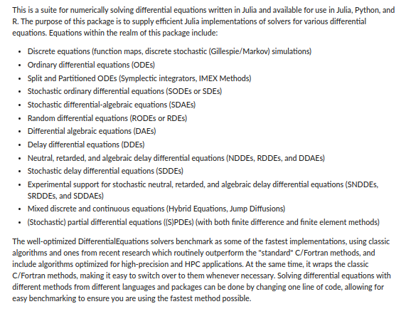
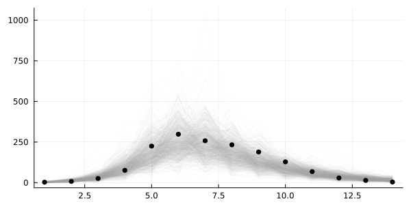
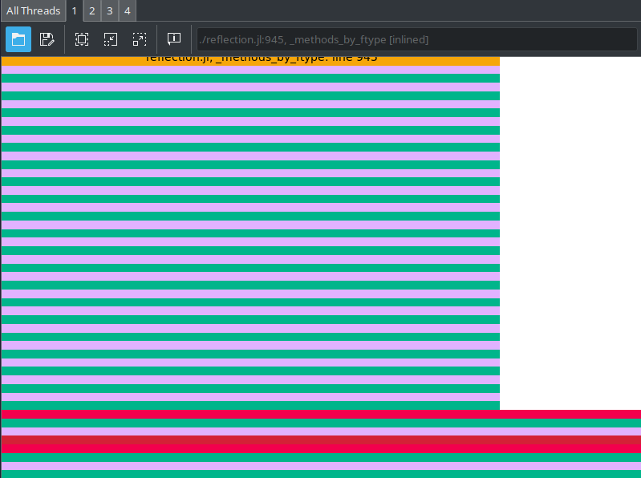

More Julia and some Bayesian Inference
with the TuringLang ecosystem
Aim of these two days
Ideally, you walk away from this workshop with the ability to solve whatever research problem you have with Julia and Turing.jl
The story of a little Norwegian boy
There once was a little Norwegian boy

When this little boy was 20 years old, he was working as a parking guard near Preikestolen/Pulpit rock
One day it was raining and there was nobody hiking, and so there was no cars in sight for the little boy to point
When his boss wasn't looking, the little 20 year-old boy had an amazing idea
Maybe I can use this method of Mr. Bayes I learned a bit about yesterday to model football / Premier League?
The little boy got very excited and started looking for stuff on the big interwebs
The little boy came across this

And got very excited
But at the time, the little boy knew next to nothing about programming
The little boy couldn't write the code to do the inference
Whence the little boy became a sad little boy :(
But time heals all wounds, and at some point the little boy learned Python
And in Python, the boy found the probabilistic programming language pymc3
Maybe I can use
pymc3to perform inference in that football / Premier League model?
And so the sad boy once more became an excited little boy :)
But there was a problem
The boy wanted to write a for-loop in his model, but the model didn't want it to be so and complained!
The boy got frustrated and gave up, once more becoming a sad little boy :(
The boy should have known that the computational backend theano that was used by pymc3 at the time couldn't handle a for-loop, and instead he should have used scan. But the boy was only 20-something years old; he didn't know.
Some years later the boy discovers a programming language called Julia
Julia makes a few promises
- It's fast. Like really fast.
- It's interactive; doesn't require full compilation for you to play with it.
- You don't have to specify types everywhere.
The boy thinks
Wait, but this sounds like Python but the only difference is that…I CAN WRITE FOR-LOOPS WITHOUT FEELING BAD ABOUT IT?!
Yes, yes he could
And 3.5 years later, he's still writing for-loops. Well, sort of.
But it really is fast
Figure 1: https://julialang.org/benchmarks/ (2023-01-18)
And the consequences are
- Even a naive implementation will be fairly fast!
- If you want to go faster, you just optimize the code in Julia!
- No need to drop down to C(++)
- If you want to go faster, you just optimize the code in Julia!
- ⟹ "Every" package is written in Julia!
- Encountered a bug? Have to debug the Julia code
- Same language as you're writing in!
- Encountered a bug? Have to debug the Julia code
- ⟹ Same for extending packages!
- Can change functions to experiment with code you don't even own!
- Can change functions to experiment with code you don't even own!
Before we begin
Make sure you're in the correct directory
pwd()
"/drive-2/Projects/public/Turing-Workshop/2023-MRC-BSU-and-UKHSA/Part-2-More-Julia-and-some-Bayesian-inference"
Then run something like (depending on which OS you are on)
# Add `-t N` to start Julia with N threads
julia --project
or if you're already in a REPL, do
]activate .
Activating project at `/drive-2/Projects/public/Turing-Workshop/2023-MRC-BSU-and-UKHSA/Part-2-More-Julia-and-some-Bayesian-inference`
to activate the project
And just to check that you're in the correct one
]status
Project Part2 v0.1.0 Status `/drive-2/Projects/public/Turing-Workshop/2023-MRC-BSU-and-UKHSA/Part-2-More-Julia-and-some-Bayesian-inference/Project.toml` [336ed68f] CSV v0.10.11 ⌃ [052768ef] CUDA v4.4.1 [124859b0] DataDeps v0.7.11 [a93c6f00] DataFrames v1.6.1 [2b5f629d] DiffEqBase v6.129.0 [0c46a032] DifferentialEquations v7.9.1 [31c24e10] Distributions v0.25.100 [7073ff75] IJulia v1.24.2 [7f7a1694] Optimization v3.17.0 [36348300] OptimizationOptimJL v0.1.9 [91a5bcdd] Plots v1.39.0 [37e2e3b7] ReverseDiff v1.15.1 [1ed8b502] SciMLSensitivity v7.39.0 [4c63d2b9] StatsFuns v1.3.0 [f3b207a7] StatsPlots v0.15.6 [fce5fe82] Turing v0.29.1 [0db1332d] TuringBenchmarking v0.3.2 [ea0860ee] TuringCallbacks v0.4.0 [0004c1f4] TuringGLM v2.8.1 [ade2ca70] Dates Info Packages marked with ⌃ have new versions available and may be upgradable.
Download and install dependencies
]instantiate
And finally, do
using Part2
to get some functionality I've implemented for the occasion
Base & Standard library
Julia is mainly a programing language for scientific computing
⟹ Julia comes with tons of useful functionality built-in
Base
Base is the only module which is always imported
It contains the most fundamental functionality of the language, e.g.
@which map
Base
Relevant modules you'll find in Base
Filesystem
pwd() # current working directory
"/drive-2/Projects/public/Turing-Workshop/2023-MRC-BSU-and-UKHSA/Part-2-More-Julia-and-some-Bayesian-inference"
@which pwd
Base.Filesystem
While we're at it, let's make ourselves a directory for the outputs
outputdir(args...) = joinpath("assets", "outputs", "more-julia", args...)
outputdir (generic function with 1 method)
outputdir()
"assets/outputs/more-julia"
# Create it, if it doesn't exist
mkpath(outputdir())
"assets/outputs/more-julia"
Multi-threading
Threads
Base.Threads
Threads.nthreads()
4
Or we can call using Threads so so we don't have to write Threads.
using Base.Threads
nthreads()
4
Making use of the threads is trivial
Threads.@threads for i in 1:10
println("Thread $(Threads.threadid()): $i")
end
Thread 1: 1 Thread 4: 2 Thread 4: 3 Thread 4: 9 Thread 4: 10 Thread 3: 7 Thread 3: 8 Thread 2: 4 Thread 2: 5 Thread 2: 6
Standard library
These are all the packages that come with Julia but you explicitly have to load with using
Dates
using Dates
before = Dates.now()
2023-09-20T23:59:36.753
Dates.now() - before
781 milliseconds
dump(before)
DateTime
instant: Dates.UTInstant{Millisecond}
periods: Millisecond
value: Int64 63830937576753
Random
using Random
We can set the "global" seed
Random.seed!(1234)
TaskLocalRNG()
rand()
0.32597672886359486
# Xoshiro is what Julia uses by default
rng = Random.Xoshiro(1234)
rand(rng) # <= same as before
0.32597672886359486
To sample multiple values, we just specify how many we want
rand(3)
3-element Vector{Float64}:
0.5490511363155669
0.21858665481883066
0.8942454282009883
rand(3, 3)
3×3 Matrix{Float64}:
0.520355 0.967143 0.951162
0.639562 0.205168 0.0739957
0.839622 0.527184 0.571586
rand(Float32)
0.07271612f0
And of course other standard sampling functions are available
randn()
1.724189934074888
randexp()
0.04221258127478853
# Sample uniformly from a vector
rand([1, 2, 3])
3
LinearAlgebra
A = [1 2 3; 4 1 6; 7 8 1]
3×3 Matrix{Int64}:
1 2 3
4 1 6
7 8 1
using LinearAlgebra
norm(A), dot(A[:, 1], A[:, 3])
(13.45362404707371, 34)
@which norm
LinearAlgebra
Other functions are det, dot, cholesky, and much, much more.
SparseArrays
using SparseArrays
A_sparse = sparse([1, 1, 2, 3], [1, 3, 2, 3], [0, 1, 2, 0])
3×3 SparseMatrixCSC{Int64, Int64} with 4 stored entries:
0 ⋅ 1
⋅ 2 ⋅
⋅ ⋅ 0
dropzeros(A_sparse)
3×3 SparseMatrixCSC{Int64, Int64} with 2 stored entries:
⋅ ⋅ 1
⋅ 2 ⋅
⋅ ⋅ ⋅
And standard array methods are applicable
# `A` is the dense array from earlier
A * A_sparse
3×3 Matrix{Int64}:
0 4 1
0 2 4
0 16 7
Statistics
using Statistics
mean(A), std(A)
(3.6666666666666665, 2.7386127875258306)
Distributed
Functionality for parallel computation across workers (either local or remote)
using Distributed
nprocs()
1
# Spawn a local worker
addprocs(1)
1-element Vector{Int64}:
2
# Spawn a remote worker (this machine won't work on your computer)
addprocs(["tor@beastly"], tunnel=true, dir="/tmp/")
1-element Vector{Int64}:
3
nprocs()
3
# Define something on all workers
@everywhere function hostname_and_number(i)
# Execute shell command on worker to get hostname.
# NOTE: Using `...` syntax for shell commands.
# This creates a `Cmd`, which is run once we call `read on it.
hostname = read(`hostname`, String)
# Return a tuple of worker ID, hostname and the number.
return (myid(), i, chomp(hostname))
end
# Run the function on all workers
pmap(hostname_and_number, 1:12)
12-element Vector{Tuple{Int64, Int64, SubString{String}}}:
(2, 1, "tor-Prestige-15-A10SC")
(3, 2, "beastly")
(2, 3, "tor-Prestige-15-A10SC")
(3, 4, "beastly")
(2, 5, "tor-Prestige-15-A10SC")
(2, 6, "tor-Prestige-15-A10SC")
(2, 7, "tor-Prestige-15-A10SC")
(2, 8, "tor-Prestige-15-A10SC")
(2, 9, "tor-Prestige-15-A10SC")
(2, 10, "tor-Prestige-15-A10SC")
(2, 11, "tor-Prestige-15-A10SC")
(2, 12, "tor-Prestige-15-A10SC")
Logging
A = ones(Int, 4, 4)
v = ones(100)
@info "Some variables" A s=sum(v)
┌ Info: Some variables
│ A =
│ 4×4 Matrix{Int64}:
│ 1 1 1 1
│ 1 1 1 1
│ 1 1 1 1
│ 1 1 1 1
└ s = 100.0
We can also change the logger for a particular block of code
using Logging
with_logger(NullLogger()) do
@info "Some variables" A s=sum(v)
end
TASK Estimate \(\pi\)
Extra: Parallelize it.
SOLUTION Estimate \(\pi\)
Well, Julia has irrational numbers built-in
π
π = 3.1415926535897...
So you could just do
Float64(π)
3.141592653589793
But that's not fair.
num_within = 0; num_total = 1_000_000
for i in 1:num_total
x = 2 .* rand(2) .- 1
if norm(x) < 1
num_within += 1
end
end
# Area of a circle = πr^2 = π * (1/2)^2 = π/4
4 * num_within / num_total
3.143988
Scientific computing ecosystem
- DataFrames.jl, etc.
- Plots.jl, etc.
- Distributions.jl, etc.
- Optimization.jl and all it contains
- DifferentialEquations.jl
- Deep learning, e.g. Flux.jl
- Automatic Differentiation
- BenchmarkTools.jl
And more, of course
Running example
An outbreak of influenza A (H1N1) in 1978 at a British boarding school
- 763 male students -> 512 of which became ill
- Reported that one infected boy started the epidemic
- Observations are number of boys in bed over 14 days
Data are freely available in the R package outbreaks, maintained as part of the R Epidemics Consortium
DataFrames.jl
using DataFrames
In Julia, the go-to for working with datasets is DataFrames.jl
If you don't want to let go of the tidyverse and you don't mind a bunch of magic, you can use https://github.com/TidierOrg/Tidier.jl
If you're already familiar with equivalents in R or Python, the following is a great reference: https://dataframes.juliadata.org/stable/man/comparisons/

There are many different ways to construct a DataFrame
df = DataFrame(A=1:3, B=5:7, fixed=1)
3×3 DataFrame
Row │ A B fixed
│ Int64 Int64 Int64
─────┼─────────────────────
1 │ 1 5 1
2 │ 2 6 1
3 │ 3 7 1
DataFrame(Dict("A" => 1:3, "B" => 5:7, "fixed" => 1))
3×3 DataFrame
Row │ A B fixed
│ Int64 Int64 Int64
─────┼─────────────────────
1 │ 1 5 1
2 │ 2 6 1
3 │ 3 7 1
Notice that columns are typed
Then we can interact with the DataFrame in a variety of ways
For example: indexing
df.A
3-element Vector{Int64}:
1
2
3
df."A" # useful when column-names aren't valid Julia symbols
3-element Vector{Int64}:
1
2
3
df[:, "A"]
3-element Vector{Int64}:
1
2
3
df[:, [:A, :B]]
3×2 DataFrame
Row │ A B
│ Int64 Int64
─────┼──────────────
1 │ 1 5
2 │ 2 6
3 │ 3 7
df[:, Not(:fixed)]
3×2 DataFrame
Row │ A B
│ Int64 Int64
─────┼──────────────
1 │ 1 5
2 │ 2 6
3 │ 3 7
All the standard functions are available, e.g.
selecttransformgroupby- Different forms of
join - Etc.
There are too many functions to go through
See the docs https://dataframes.juliadata.org/stable/ for a thorough overview
Actual data
Let's load the actual data
Our data is a CSV file
readdir("data")
3-element Vector{String}:
"influenza_england_1978_school.csv"
"pest_data.csv"
"time-series.csv"
Functionality for different file formats is usually provided by separate packages:
In our case, we're working with a CSV file, so we'll use CSV.jl:
using CSV
datafile = CSV.File(joinpath("data", "influenza_england_1978_school.csv"));
And then we can convert this CSV.File into a DataFrame
data = DataFrame(datafile)
14×4 DataFrame
Row │ Column1 date in_bed convalescent
│ Int64 Date Int64 Int64
─────┼───────────────────────────────────────────
1 │ 1 1978-01-22 3 0
2 │ 2 1978-01-23 8 0
3 │ 3 1978-01-24 26 0
4 │ 4 1978-01-25 76 0
5 │ 5 1978-01-26 225 9
6 │ 6 1978-01-27 298 17
7 │ 7 1978-01-28 258 105
8 │ 8 1978-01-29 233 162
9 │ 9 1978-01-30 189 176
10 │ 10 1978-01-31 128 166
11 │ 11 1978-02-01 68 150
12 │ 12 1978-02-02 29 85
13 │ 13 1978-02-03 14 47
14 │ 14 1978-02-04 4 20
Woah, how does this work? We just passed a
CSV.FiletoDataFrames.DataFrame, and it just works?!
Aye, that's right
This is thanks to Tables.jl, a simple interface for tabular data
Such light-weight interface packages allow modules to seemlessly interact with each other without explicit dependencies
This is a very typical pattern in Julia
Distributions.jl
using Distributions
In Julia, the go-to for working with distributions is Distributions.jl
This package provides a large number of distributions
Used throughout the Julia community, e.g. Turing uses this
dist = Normal()
Normal{Float64}(μ=0.0, σ=1.0)
mean(dist), var(dist)
(0.0, 1.0)
Remeber the Random.rand function from earlier? This now also accepts a Distribution
x = rand(dist)
0.7638013704669433
logpdf(dist, x)
-1.2106347999682632
cdf(dist, 0.5)
0.6914624612740131
quantile.(Normal(), [0.05, 0.5, 0.95])
3-element Vector{Float64}:
-1.6448536269514724
0.0
1.6448536269514717
There is also maximum likelihood estimation (MLE)
xs = rand(Normal(1, 2), 100)
fit(Normal, xs)
Normal{Float64}(μ=1.0397121670324303, σ=1.8650444781860653)
But exactly what distributions are there?
Well, we can just check by inspecting the subtypes of Distribution
# Filter away abstract types.
nonabstract_dist_subtypes = filter(!isabstracttype, subtypes(Distribution))
# Filter away types which are not found in Distributions.jl.
dist_types_from_distributions = filter(
Base.Fix1(hasproperty, Distributions) ∘ Symbol,
nonabstract_dist_subtypes
)
84-element Vector{Any}:
Arcsine
Bernoulli
BernoulliLogit
Beta
BetaBinomial
BetaPrime
Binomial
Biweight
Cauchy
Chernoff
Chi
Chisq
Cosine
⋮
Soliton
StudentizedRange
SymTriangularDist
TDist
TriangularDist
Triweight
Truncated
Uniform
VonMises
VonMisesFisher
Weibull
Wishart
Okay, there are a bit too many
Let's separate between different variate types
filter(x -> x <: UnivariateDistribution, dist_types_from_distributions)
70-element Vector{Any}:
Arcsine
Bernoulli
BernoulliLogit
Beta
BetaBinomial
BetaPrime
Binomial
Biweight
Cauchy
Chernoff
Chi
Chisq
Cosine
⋮
SkewNormal
SkewedExponentialPower
Soliton
StudentizedRange
SymTriangularDist
TDist
TriangularDist
Triweight
Truncated
Uniform
VonMises
Weibull
Too many
Let's convert it into a Matrix and force Julia to show all columns
show(
IOContext(stdout, :limit => false),
"text/plain",
reshape(filter(x -> x <: UnivariateDistribution, dist_types_from_distributions), 10, :)
)
10×7 Matrix{Any}:
Arcsine Chi Frechet KSDist LogitNormal PGeneralizedGaussian Soliton
Bernoulli Chisq Gamma KSOneSided NegativeBinomial Pareto StudentizedRange
BernoulliLogit Cosine GeneralizedExtremeValue Kolmogorov NoncentralBeta Poisson SymTriangularDist
Beta Dirac GeneralizedPareto Kumaraswamy NoncentralChisq PoissonBinomial TDist
BetaBinomial DiscreteNonParametric Geometric Laplace NoncentralF Rayleigh TriangularDist
BetaPrime DiscreteUniform Gumbel Levy NoncentralT Rician Triweight
Binomial Epanechnikov Hypergeometric Lindley Normal Semicircle Truncated
Biweight Erlang InverseGamma LogNormal NormalCanon Skellam Uniform
Cauchy Exponential InverseGaussian LogUniform NormalInverseGaussian SkewNormal VonMises
Chernoff FDist JohnsonSU Logistic OrderStatistic SkewedExponentialPower Weibull
Now for multivariate distributions
filter(x -> x <: MultivariateDistribution, dist_types_from_distributions)
6-element Vector{Any}:
Dirichlet
DirichletMultinomial
JointOrderStatistics
Multinomial
Product
VonMisesFisher
filter(x -> x <: MatrixDistribution, dist_types_from_distributions)
7-element Vector{Any}:
InverseWishart
LKJ
MatrixBeta
MatrixFDist
MatrixNormal
MatrixTDist
Wishart
Plots.jl
using Plots
The most commonly used plotting library is Plots.jl
Has many backends, including:
- GR
- PyPlot
- Plotly
- Unicode
- PGFPlots
- And more
But the code is the same for all backends
# GR is used by default
Plots.backend()
Plots.GRBackend()
p1 = plot(1:10, rand(10), size=(450, 200))

p2 = scatter(1:10, rand(10), size=(450, 200))
plot(p1, p2, layout=(1, 2), size=(800, 200))

A neat example from the docs
# Define the Lorenz attractor
Base.@kwdef mutable struct Lorenz
dt::Float64 = 0.02
σ::Float64 = 10
ρ::Float64 = 28
β::Float64 = 8/3
x::Float64 = 1
y::Float64 = 1
z::Float64 = 1
end
function step!(l::Lorenz)
dx = l.σ * (l.y - l.x)
dy = l.x * (l.ρ - l.z) - l.y
dz = l.x * l.y - l.β * l.z
l.x += l.dt * dx
l.y += l.dt * dy
l.z += l.dt * dz
end
attractor = Lorenz()
Lorenz(0.02, 10.0, 28.0, 2.6666666666666665, 1.0, 1.0, 1.0)
# Initialize a 3D plot with 1 empty series
plt = plot3d(
1,
xlim = (-30, 30),
ylim = (-30, 30),
zlim = (0, 60),
title = "Lorenz Attractor",
legend = false,
marker = 2,
)
# Build an animated gif by pushing new points to the plot, saving every 10th frame
anim = @animate for i=1:1500
step!(attractor)
push!(plt, attractor.x, attractor.y, attractor.z)
end every 10
gif(anim, outputdir("lorenz.gif"));
[ Info: Saved animation to /drive-2/Projects/public/Turing-Workshop/2023-MRC-BSU-and-UKHSA/Part-2-More-Julia-and-some-Bayesian-inference/assets/outputs/more-julia/lorenz.gif
Ecosystem
Plots.jl also has a very nice recipe-system
Allows you to define how to plot your own types
As a result, packages often define customized plotting recipes for their types
https://docs.juliaplots.org/latest/ecosystem/#Community-packages
StatsPlots.jl
For us, StatsPlots.jl is particularly relevant
using StatsPlots
It contains custom plotting functionality for dataframes and distibutions
plot(Normal())
It also contains the macro @df for working with dataframes
@df data scatter(:date, :in_bed, label=nothing, ylabel="Number of students in bed")

DifferentialEquations.jl
using DifferentialEquations
Everything related to differential equations is provided by DifferentialEquations.jl and the SciML ecosystem
And I really do mean everything


Differential equations
Suppose we have some function \(f\) which describes how a state \(x\) evolves wrt. \(t\)
which we then need to integrate to obtain the actual state at some time \(t\)
In many interesting scenarios numerical methods are required to obtain \(x(t)\)
Example: SIR model
One particular example of an (ordinary) differential equation that you might have seen recently is the SIR model used in epidemiology
Figure 2: https://covid19.uclaml.org/model.html (2023-01-19)
The temporal dynamics of the sizes of each of the compartments are governed by the following system of ODEs:
where
- \(S(t)\) is the number of people susceptible to becoming infected,
- \(I(t)\) is the number of people currently infected,
- \(R(t)\) is the number of recovered people,
- \(β\) is the constant rate of infectious contact between people,
- \(\gamma\) the constant recovery rate of infected individuals
Converting this ODE into code is just
const N = 763 # size of population
function SIR!(
du, # buffer for the updated differential equation
u, # current state
p, # parameters
t # current time
)
S, I, R = u
β, γ = p
du[1] = dS = -β * I * S / N
du[2] = dI = β * I * S / N - γ * I
du[3] = dR = γ * I
end
SIR! (generic function with 1 method)
Not too bad!
Initial conditions are then
and we want to integrate from \(t = 0\) to \(t = 14\)
# Include 0 because that's the initial condition before any observations.
tspan = (0.0, 14.0)
# Initial conditions are:
# S(0) = N - 1; I(0) = 1; R(0) = 0
u0 = [N - 1, 1, 0.0]
3-element Vector{Float64}:
762.0
1.0
0.0
Now we just need to define the overall problem and we can solve:
# Just to check that everything works, we'll just use some "totally random" values for β and γ:
problem_sir = let β = 2.0, γ = 0.6
ODEProblem(SIR!, u0, tspan, (β, γ))
end
ODEProblem with uType Vector{Float64} and tType Float64. In-place: true
timespan: (0.0, 14.0)
u0: 3-element Vector{Float64}:
762.0
1.0
0.0
Aaaand
sol = solve(problem_sir)
retcode: Success
Interpolation: specialized 4th order "free" interpolation, specialized 2nd order "free" stiffness-aware interpolation
t: 23-element Vector{Float64}:
0.0
0.0023558376404244326
0.025914214044668756
0.11176872871946908
0.26714420676761075
0.47653584778586056
0.7436981238065388
1.0701182881347182
1.4556696154809898
1.8994815718103506
2.4015425820305163
2.9657488203418048
3.6046024613854746
4.325611232479916
5.234036476235002
6.073132270491685
7.323851265223563
8.23100744184026
9.66046960467715
11.027717843180652
12.506967592177675
13.98890399536329
14.0
u: 23-element Vector{Vector{Float64}}:
[762.0, 1.0, 0.0]
[761.9952867607622, 1.003297407481751, 0.001415831756055325]
[761.9472927630898, 1.036873767352754, 0.015833469557440357]
[761.7584189579304, 1.1690001128296739, 0.0725809292398516]
[761.353498610305, 1.4522140137552049, 0.19428737593979384]
[760.6490369821046, 1.9447820690728455, 0.4061809488225752]
[759.3950815454128, 2.8210768113583082, 0.7838416432288186]
[757.0795798160242, 4.437564277195732, 1.4828559067800167]
[752.6094742865345, 7.552145919430467, 2.8383797940350495]
[743.573784947305, 13.823077731564027, 5.603137321131049]
[724.5575481927715, 26.909267078762316, 11.533184728466205]
[683.6474029897502, 54.51612001957392, 24.836476990675976]
[598.1841629858786, 109.41164143668018, 55.40419557744127]
[450.08652743810205, 192.396449154863, 120.51702340703504]
[259.11626253270623, 256.9925778114915, 246.89115965580237]
[148.3573731526537, 240.10301213899098, 374.53961470835543]
[76.52998017846475, 160.6373332952353, 525.8326865263001]
[55.70519994004921, 108.7634182279299, 598.531381832021]
[41.39587834423381, 55.09512088924873, 666.5090007665176]
[35.87067243374374, 27.821838135708532, 699.3074894305479]
[33.252184333490774, 13.087185981359177, 716.6606296851502]
[32.08996839417716, 6.105264616193066, 724.8047669896299]
[32.08428686823946, 6.070415830241046, 724.8452973015196]
We didn't specify a solver
DifferentialEquations.jl uses AutoTsit5(Rosenbrock32()) by default
Which is a composition between
Tsit5(4th order Runge-Kutta), andRosenbrock32(3rd order stiff solver)
with automatic switching between the two
AutoTsit5(Rosenbrock32()) covers many use-cases well, but see
- https://docs.sciml.ai/DiffEqDocs/stable/solvers/ode_solve/
- https://www.stochasticlifestyle.com/comparison-differential-equation-solver-suites-matlab-r-julia-python-c-fortran/
for more info on choosing a solver
This is the resulting solution
plot(
sol,
linewidth=2, xaxis="Time in days", label=["Suspectible" "Infected" "Recovered"],
alpha=0.5, size=(500, 300)
)
scatter!(1:14, data.in_bed, label="Data", color="black")

This doesn't really match the data though; let's do better
Approach #1: find optimal values of \(\beta\) and \(\gamma\) by minimizing some loss, e.g. sum-of-squares
where \(\big( y_i \big)_{i = 1}^{14}\) are the observations, \(F\) is the integrated system
Optimization.jl
In Julia, there are tons of packages for performing all kinds of optimization
Optimization.jl provides a convenient interface to many of them
using Optimization
Figure 3: https://docs.sciml.ai/Optimization/stable/#Overview-of-the-Optimizers (2023-09-15)
Recall we want to solve
where \(\big( y_i \big)_{i = 1}^{14}\) are the observations, \(F\) is the integrated system
First we define the loss
# Define the loss function.
function loss_sir(problem_orig, p)
# `remake` just, well, remakes the `problem` with parameters `p` replaced.
problem = remake(problem_orig, p=p)
# To ensure we get solutions _exactly_ at the timesteps of interest,
# i.e. every day we have observations, we use `saveat=1` to tell `solve`
# to save at every timestep (which is one day).
sol = solve(problem, saveat=1)
# Extract the 2nd state, the (I)infected, for the dates with observations.
sol_for_observed = sol[2, 2:15]
# Compute the sum-of-squares of the infected vs. data.
return sum(abs2.(sol_for_observed - data.in_bed))
end
loss_sir (generic function with 1 method)
Then we can define our OptimizationProblem
opt_problem = OptimizationProblem(
OptimizationFunction(
(p,_) -> loss_sir(problem_sir, p), # function to minimize
Optimization.AutoForwardDiff() # use ForwardDiff for automatic differentiation
),
[2.0, 0.5], # initial values
lb = [0, 0], # lower bounds on variables
ub = [Inf, Inf], # upper bounds on variables
)
OptimizationProblem. In-place: true
u0: 2-element Vector{Float64}:
2.0
0.5
And for general deterministic problems, Optim.jl is a good choice
using OptimizationOptimJL
opt = solve(opt_problem, NelderMead())
u: 2-element Vector{Float64}:
1.6692320164955483
0.44348639177622445
β, λ = opt
β, λ
(1.6692320164955483, 0.44348639177622445)
# Solve the problem with the obtained parameters.
problem_sir = remake(problem_sir, p=(β, λ))
sol = solve(problem_sir)
# Plot the solution.
plot(sol, linewidth=2, xaxis="Time in days", label=["Susceptible" "Infected" "Recovered"], alpha=0.5)
# And the data.
scatter!(1:14, data.in_bed, label="Data", color="black")

That's better than our totally "random" guess from earlier!
Example: SEIR model
Adding another compartment to our SIR model: the (E)xposed state
where we've added a new parameter \({\color{orange} \sigma}\) describing the fraction of people who develop observable symptoms in this time
TASK Solve the SEIR model using Julia
function SEIR!(
du, # buffer for the updated differential equation
u, # current state
p, # parameters
t # current time
)
N = 763 # population
S, E, I, R = u # have ourselves an additional state!
β, γ, σ = p # and an additional parameter!
# TODO: Implement yah fool!
du[1] = nothing
du[2] = nothing
du[3] = nothing
du[4] = nothing
end
BONUS: find minimizers of sum-of-squares
SOLUTION Solve the SEIR model using Julia
function SEIR!(
du, # buffer for the updated differential equation
u, # current state
p, # parameters
t # current time
)
N = 763 # population
S, E, I, R = u # have ourselves an additional state!
β, γ, σ = p # and an additional parameter!
# Might as well cache these computations.
βSI = β * S * I / N
σE = σ * E
γI = γ * I
du[1] = -βSI
du[2] = βSI - σE
du[3] = σE - γI
du[4] = γI
end
SEIR! (generic function with 1 method)
problem_seir = let u0 = [N - 1, 0, 1, 0], β = 2.0, γ = 0.6, σ = 0.8
ODEProblem(SEIR!, u0, tspan, (β, γ, σ))
end
ODEProblem with uType Vector{Int64} and tType Float64. In-place: true
timespan: (0.0, 14.0)
u0: 4-element Vector{Int64}:
762
0
1
0
sol_seir = solve(problem_seir, saveat=1)
retcode: Success
Interpolation: 1st order linear
t: 15-element Vector{Float64}:
0.0
1.0
2.0
3.0
4.0
5.0
6.0
7.0
8.0
9.0
10.0
11.0
12.0
13.0
14.0
u: 15-element Vector{Vector{Float64}}:
[762.0, 0.0, 1.0, 0.0]
[760.1497035901518, 1.277915971753478, 1.015887135649055, 0.5564933024456415]
[757.5476928906271, 2.425869618233348, 1.6850698824327135, 1.341367608706787]
[753.081189706403, 4.277014534677882, 2.9468385687120784, 2.6949571902067637]
[745.3234082630842, 7.455598293492681, 5.155811621098982, 5.065181822323939]
[731.9851682751213, 12.855816151849933, 8.960337047554939, 9.198678525473571]
[709.5042941973462, 21.77178343781762, 15.384985521594785, 16.338936843241182]
[672.8733895183619, 35.77263271085456, 25.88133104438007, 28.472646726403138]
[616.390571176038, 55.9717775696742, 42.09614416178475, 48.54150709250277]
[536.453596476594, 81.2428045994271, 64.9673325777641, 80.33626634621449]
[436.43708330634297, 106.04037246704702, 92.9550757379631, 127.56746848864664]
[329.60092931771436, 121.08020372279418, 120.48402926084937, 191.83483769864185]
[233.8471941518982, 119.43669383157659, 139.3233304893263, 270.3927815271987]
[160.88805352426687, 102.7399386960996, 143.3826208089892, 355.98938697064415]
[111.72261866282292, 79.02493776169311, 132.78384886713565, 439.46859470834806]
plot(sol_seir, linewidth=2, xaxis="Time in days", label=["Susceptible" "Exposed" "Infected" "Recovered"], alpha=0.5)
scatter!(1:14, data.in_bed, label="Data")

Don't look so good. Let's try Optim.jl again.
function loss_seir(problem, p)
problem = remake(problem, p=p)
sol = solve(problem, saveat=1)
# NOTE: 3rd state is now the (I)nfectious compartment!!!
sol_for_observed = sol[3, 2:15]
return sum(abs2.(sol_for_observed - data.in_bed))
end
loss_seir (generic function with 1 method)
opt_problem = OptimizationProblem(
OptimizationFunction(
(p,_) -> loss_seir(problem_seir, p), # function to minimize
Optimization.AutoForwardDiff() # use ForwardDiff for automatic differentiation
),
[2.0, 0.5, 0.9], # initial values
lb = [0, 0, 0], # lower bounds on variables
ub = [Inf, Inf, Inf], # upper bounds on variables
)
OptimizationProblem. In-place: true
u0: 3-element Vector{Float64}:
2.0
0.5
0.9
opt = solve(opt_problem, NelderMead())
u: 3-element Vector{Float64}:
4.853892250588215
0.46714672936112517
0.8150220601014526
β, γ, σ = opt
u: 3-element Vector{Float64}:
4.853892250588215
0.46714672936112517
0.8150220601014526
sol_seir = solve(remake(problem_seir, p=(β, γ, σ)), saveat=1)
plot(sol_seir, linewidth=2, xaxis="Time in days", label=["Susceptible" "Exposed" "Infected" "Recovered"], alpha=0.5)
scatter!(1:14, data.in_bed, label="Data", color="black")

But…but these are point estimates! What about distributions? WHAT ABOUT UNCERTAINTY?!
No, no that's fair.
Let's do some Bayesian inference then.
BUT FIRST!
Making our future selves less annoyed
It's annoying to have all these different loss-functions for both SIR! and SEIR!
# Abstract type which we can use to dispatch on.
abstract type AbstractEpidemicProblem end
struct SIRProblem{P} <: AbstractEpidemicProblem
problem::P
N::Int
end
function SIRProblem(N::Int; u0 = [N - 1, 1, 0.], tspan = (0, 14), p = [2.0, 0.6])
return SIRProblem(ODEProblem(SIR!, u0, tspan, p), N)
end
SIRProblem
Then we can just construct the problem as
sir = SIRProblem(N);
And to make it a bit easier to work with, we add some utility functions
# General.
parameters(prob::AbstractEpidemicProblem) = prob.problem.p
initial_state(prob::AbstractEpidemicProblem) = prob.problem.u0
population(prob::AbstractEpidemicProblem) = prob.N
# Specializations.
susceptible(::SIRProblem, u::AbstractMatrix) = u[1, :]
infected(::SIRProblem, u::AbstractMatrix) = u[2, :]
recovered(::SIRProblem, u::AbstractMatrix) = u[3, :]
recovered (generic function with 1 method)
So that once we've solved the problem, we can easily extract the compartment we want, e.g.
sol = solve(sir.problem, saveat=1)
infected(sir, sol)
15-element Vector{Float64}:
1.0
4.026799533924022
15.824575905720003
56.779007685250534
154.43105799061686
248.98982384839158
243.67838619968526
181.93939659551984
120.64627375763273
75.92085282572398
46.58644927641269
28.214678599716414
16.96318676577873
10.158687874394722
6.070415830241046
TASK Implement SEIRProblem
struct SEIRProblem <: AbstractEpidemicProblem
# ...
end
function SEIRProblem end
susceptible
exposed
infected
recovered
SOLUTION Implement SEIRProblem
struct SEIRProblem{P} <: AbstractEpidemicProblem
problem::P
N::Int
end
function SEIRProblem(N::Int; u0 = [N - 1, 0, 1, 0.], tspan = (0, 14), p = [4.5, 0.45, 0.8])
return SEIRProblem(ODEProblem(SEIR!, u0, tspan, p), N)
end
susceptible(::SEIRProblem, u::AbstractMatrix) = u[1, :]
exposed(::SEIRProblem, u::AbstractMatrix) = u[2, :]
infected(::SEIRProblem, u::AbstractMatrix) = u[3, :]
recovered(::SEIRProblem, u::AbstractMatrix) = u[4, :]
recovered (generic function with 2 methods)
Now, given a problem and a sol, we can query the sol for the infected state without explicit handling of which problem we're working with
seir = SEIRProblem(N);
sol = solve(seir.problem, saveat=1)
infected(seir, sol)
15-element Vector{Float64}:
1.0
1.9941817088874336
6.9585823072029
23.926233517606498
74.23638542794971
176.98368495653585
276.06126059898344
293.92632518571605
249.92836195453708
189.07578975511504
134.2373192679034
91.82578430804273
61.38108478932364
40.42264366743211
26.357816296754425
Same loss for both!
function loss(problem_wrapper::AbstractEpidemicProblem, p)
# NOTE: Extract the `problem` from `problem_wrapper`.
problem = remake(problem_wrapper.problem, p=p)
sol = solve(problem, saveat=1)
# NOTE: Now this is completely general!
sol_for_observed = infected(problem_wrapper, sol)[2:end]
return sum(abs2.(sol_for_observed - data.in_bed))
end
loss (generic function with 1 method)
Now we can call the same loss for both SIR and SEIR
loss(SIRProblem(N), [2.0, 0.6])
50257.839781348805
loss(SEIRProblem(N), [2.0, 0.6, 0.8])
287325.105532706
GPU programming
using CUDA
I'll use CUDA here, but there is also support for other GPU backends
For more, see https://juliagpu.org/
Because some of you might not have a GPU, we'll use
CUDA.has_cuda()
true
to avoid executing the GPU code in that case
if CUDA.has_cuda()
CUDA.versioninfo()
end
CUDA runtime 11.8, artifact installation CUDA driver 11.4 NVIDIA driver 470.199.2 CUDA libraries: - CUBLAS: 11.11.3 - CURAND: 10.3.0 - CUFFT: 10.9.0 - CUSOLVER: 11.4.1 - CUSPARSE: 11.7.5 - CUPTI: 18.0.0 - NVML: 11.0.0+470.199.2 Julia packages: - CUDA: 4.4.1 - CUDA_Driver_jll: 0.5.0+1 - CUDA_Runtime_jll: 0.6.0+0 Toolchain: - Julia: 1.9.3 - LLVM: 14.0.6 - PTX ISA support: 3.2, 4.0, 4.1, 4.2, 4.3, 5.0, 6.0, 6.1, 6.3, 6.4, 6.5, 7.0, 7.1, 7.2, 7.3, 7.4 - Device capability support: sm_35, sm_37, sm_50, sm_52, sm_53, sm_60, sm_61, sm_62, sm_70, sm_72, sm_75, sm_80, sm_86 1 device: 0: NVIDIA GeForce GTX 1650 with Max-Q Design (sm_75, 3.815 GiB / 3.822 GiB available)
# Array on CPU
xs = rand(2)
2-element Vector{Float64}:
0.7911106632038112
0.7542712130619208
if CUDA.has_cuda()
# Array on GPU
xs_cuda = cu(xs)
end
2-element CuArray{Float32, 1, CUDA.Mem.DeviceBuffer}:
0.79111063
0.7542712
And that's it!
if CUDA.has_cuda()
2 * xs_cuda
end
2-element CuArray{Float32, 1, CUDA.Mem.DeviceBuffer}:
1.5822213
1.5085424
if CUDA.has_cuda()
xs_cuda .+ xs_cuda
end
2-element CuArray{Float32, 1, CUDA.Mem.DeviceBuffer}:
1.5822213
1.5085424
if CUDA.has_cuda()
X_cuda = xs_cuda * xs_cuda' + 1f-2 * I
cholesky(X_cuda)
end
Cholesky{Float32, CuArray{Float32, 2, CUDA.Mem.DeviceBuffer}}
U factor:
2×2 UpperTriangular{Float32, CuArray{Float32, 2, CUDA.Mem.DeviceBuffer}}:
0.797406 0.748317
⋅ 0.137649
Important: Turing.jl is not completely GPU compatible
You can execute all the GPU code you want inside the model
But you can't use GPU for the entire computation, yet
Though some samplers are already GPU compatible
Turing.jl
using Turing
and so we are finally here
A simple demo
# 1. Define the model
@model function simple_demo(x, y)
s ~ InverseGamma(2, 3)
m ~ Normal(0, sqrt(s))
x ~ Normal(m, sqrt(s))
y ~ Normal(m, sqrt(s))
end
# 2. Instantiate the model, giving it some data.
model = simple_demo(1.5, 2.0)
# 3. Sample.
chain = sample(model, NUTS(), 1000);
┌ Info: Found initial step size └ ϵ = 0.8 Sampling: 100%|█████████████████████████████████████████| Time: 0:00:00
chain
Chains MCMC chain (1000×14×1 Array{Float64, 3}):
Iterations = 501:1:1500
Number of chains = 1
Samples per chain = 1000
Wall duration = 9.12 seconds
Compute duration = 9.12 seconds
parameters = s, m
internals = lp, n_steps, is_accept, acceptance_rate, log_density, hamiltonian_energy, hamiltonian_energy_error, max_hamiltonian_energy_error, tree_depth, numerical_error, step_size, nom_step_size
Summary Statistics
parameters mean std mcse ess_bulk ess_tail rhat e ⋯
Symbol Float64 Float64 Float64 Float64 Float64 Float64 ⋯
s 1.9267 1.3645 0.0630 485.6727 577.6553 1.0054 ⋯
m 1.2265 0.7849 0.0309 674.6064 552.4304 1.0099 ⋯
1 column omitted
Quantiles
parameters 2.5% 25.0% 50.0% 75.0% 97.5%
Symbol Float64 Float64 Float64 Float64 Float64
s 0.5507 1.0696 1.5418 2.3495 5.1686
m -0.2176 0.7099 1.1755 1.6958 2.7835
plot(chain)

# 1. Define the model
@model function simple_demo(x, y)
s ~ InverseGamma(2, 3)
m ~ Normal(0, sqrt(s))
x ~ Normal(m, sqrt(s))
y ~ Normal(m, sqrt(s))
end
# 2. Instantiate the model, giving it some data.
model = simple_demo(1.5, 2.0)
# 3. Sample.
chain = sample(model, NUTS(), 1000);
Okay, what is going on here?
Let's break it down
To define a model in Turing.jl, we use the @model macro
@model function simple_demo(x, y)
s ~ InverseGamma(2, 3)
m ~ Normal(0, sqrt(s))
x ~ Normal(m, sqrt(s))
y ~ Normal(m, sqrt(s))
end
simple_demo (generic function with 2 methods)
which, as we can see, results in a few simple_demo methods
- One method is for evaluation of the model
- The rest (one, here) are for constructing the
Model
model = simple_demo(1.5, 2.0)
Model( args = (:x, :y) defaults = () context = DynamicPPL.DefaultContext() )
In fact, we can call the model
model()
2.0
It returns 2.0 because the last line was
y ~ Normal(m, sqrt(s))
where y is conditioned to be 2.0
We can add an explicit return statement if we want
@model function simple_demo(x, y)
s ~ InverseGamma(2, 3)
m ~ Normal(0, sqrt(s))
x ~ Normal(m, sqrt(s))
y ~ Normal(m, sqrt(s))
# This is just standard Julia, so we can put anything in here.
return (; s, m, x, y, hello=42)
end
simple_demo (generic function with 2 methods)
model = simple_demo(1.5, 2.0)
model()
(s = 0.9042382869221636, m = -0.4180599286347479, x = 1.5, y = 2.0, hello = 42)
When we call the model, s and m are sampled from the prior
This can be very useful for debugging, e.g.
@model function demo_buggy()
x ~ truncated(Normal(), -10, 0)
y ~ Normal(0, x)
end
model_buggy = demo_buggy()
model_buggy()
DomainError with -1.5909802088598057:
Normal: the condition σ >= zero(σ) is not satisfied.
Stacktrace:
[1] #371
@ ~/.julia/packages/Distributions/Ufrz2/src/univariate/continuous/normal.jl:37 [inlined]
[2] check_args
@ ~/.julia/packages/Distributions/Ufrz2/src/utils.jl:89 [inlined]
[3] #Normal#370
@ ~/.julia/packages/Distributions/Ufrz2/src/univariate/continuous/normal.jl:37 [inlined]
[4] Normal
@ ~/.julia/packages/Distributions/Ufrz2/src/univariate/continuous/normal.jl:36 [inlined]
[5] #Normal#373
@ ~/.julia/packages/Distributions/Ufrz2/src/univariate/continuous/normal.jl:42 [inlined]
[6] Normal(μ::Int64, σ::Float64)
@ Distributions ~/.julia/packages/Distributions/Ufrz2/src/univariate/continuous/normal.jl:42
[7] macro expansion
@ ~/.julia/packages/DynamicPPL/m0PXI/src/compiler.jl:555 [inlined]
[8] demo_buggy(__model__::DynamicPPL.Model{typeof(demo_buggy), (), (), (), Tuple{}, Tuple{}, DynamicPPL.DefaultContext}, __varinfo__::DynamicPPL.ThreadSafeVarInfo{DynamicPPL.UntypedVarInfo{DynamicPPL.Metadata{Dict{AbstractPPL.VarName, Int64}, Vector{Distribution}, Vector{AbstractPPL.VarName}, Vector{Real}, Vector{Set{DynamicPPL.Selector}}}, Float64}, Vector{Base.RefValue{Float64}}}, __context__::DynamicPPL.SamplingContext{DynamicPPL.SampleFromPrior, DynamicPPL.DefaultContext, TaskLocalRNG})
@ Main ./In[144]:3
[9] _evaluate!!
@ ~/.julia/packages/DynamicPPL/m0PXI/src/model.jl:963 [inlined]
[10] evaluate_threadsafe!!
@ ~/.julia/packages/DynamicPPL/m0PXI/src/model.jl:952 [inlined]
[11] evaluate!!
@ ~/.julia/packages/DynamicPPL/m0PXI/src/model.jl:887 [inlined]
[12] evaluate!! (repeats 2 times)
@ ~/.julia/packages/DynamicPPL/m0PXI/src/model.jl:900 [inlined]
[13] evaluate!!
@ ~/.julia/packages/DynamicPPL/m0PXI/src/model.jl:908 [inlined]
[14] (::DynamicPPL.Model{typeof(demo_buggy), (), (), (), Tuple{}, Tuple{}, DynamicPPL.DefaultContext})()
@ DynamicPPL ~/.julia/packages/DynamicPPL/m0PXI/src/model.jl:860
[15] top-level scope
@ In[144]:6
Let's insert some good old-fashioned print-statements
@model function demo_buggy()
x ~ truncated(Normal(), -10, 0)
println("x=$x")
y ~ Normal(0, x)
println("y=$y")
end
model_buggy = demo_buggy()
model_buggy()
x=-0.39059114202501893
DomainError with -0.39059114202501893:
Normal: the condition σ >= zero(σ) is not satisfied.
Stacktrace:
[1] #371
@ ~/.julia/packages/Distributions/Ufrz2/src/univariate/continuous/normal.jl:37 [inlined]
[2] check_args
@ ~/.julia/packages/Distributions/Ufrz2/src/utils.jl:89 [inlined]
[3] #Normal#370
@ ~/.julia/packages/Distributions/Ufrz2/src/univariate/continuous/normal.jl:37 [inlined]
[4] Normal
@ ~/.julia/packages/Distributions/Ufrz2/src/univariate/continuous/normal.jl:36 [inlined]
[5] #Normal#373
@ ~/.julia/packages/Distributions/Ufrz2/src/univariate/continuous/normal.jl:42 [inlined]
[6] Normal(μ::Int64, σ::Float64)
@ Distributions ~/.julia/packages/Distributions/Ufrz2/src/univariate/continuous/normal.jl:42
[7] demo_buggy(__model__::DynamicPPL.Model{typeof(demo_buggy), (), (), (), Tuple{}, Tuple{}, DynamicPPL.DefaultContext}, __varinfo__::DynamicPPL.ThreadSafeVarInfo{DynamicPPL.UntypedVarInfo{DynamicPPL.Metadata{Dict{AbstractPPL.VarName, Int64}, Vector{Distribution}, Vector{AbstractPPL.VarName}, Vector{Real}, Vector{Set{DynamicPPL.Selector}}}, Float64}, Vector{Base.RefValue{Float64}}}, __context__::DynamicPPL.SamplingContext{DynamicPPL.SampleFromPrior, DynamicPPL.DefaultContext, TaskLocalRNG})
@ Main ./In[145]:4
[8] _evaluate!!
@ ~/.julia/packages/DynamicPPL/m0PXI/src/model.jl:963 [inlined]
[9] evaluate_threadsafe!!(model::DynamicPPL.Model{typeof(demo_buggy), (), (), (), Tuple{}, Tuple{}, DynamicPPL.DefaultContext}, varinfo::DynamicPPL.UntypedVarInfo{DynamicPPL.Metadata{Dict{AbstractPPL.VarName, Int64}, Vector{Distribution}, Vector{AbstractPPL.VarName}, Vector{Real}, Vector{Set{DynamicPPL.Selector}}}, Float64}, context::DynamicPPL.SamplingContext{DynamicPPL.SampleFromPrior, DynamicPPL.DefaultContext, TaskLocalRNG})
@ DynamicPPL ~/.julia/packages/DynamicPPL/m0PXI/src/model.jl:952
[10] evaluate!!(model::DynamicPPL.Model{typeof(demo_buggy), (), (), (), Tuple{}, Tuple{}, DynamicPPL.DefaultContext}, varinfo::DynamicPPL.UntypedVarInfo{DynamicPPL.Metadata{Dict{AbstractPPL.VarName, Int64}, Vector{Distribution}, Vector{AbstractPPL.VarName}, Vector{Real}, Vector{Set{DynamicPPL.Selector}}}, Float64}, context::DynamicPPL.SamplingContext{DynamicPPL.SampleFromPrior, DynamicPPL.DefaultContext, TaskLocalRNG})
@ DynamicPPL ~/.julia/packages/DynamicPPL/m0PXI/src/model.jl:887
[11] evaluate!! (repeats 2 times)
@ ~/.julia/packages/DynamicPPL/m0PXI/src/model.jl:900 [inlined]
[12] evaluate!!
@ ~/.julia/packages/DynamicPPL/m0PXI/src/model.jl:908 [inlined]
[13] (::DynamicPPL.Model{typeof(demo_buggy), (), (), (), Tuple{}, Tuple{}, DynamicPPL.DefaultContext})()
@ DynamicPPL ~/.julia/packages/DynamicPPL/m0PXI/src/model.jl:860
[14] top-level scope
@ In[145]:8
x is negative ⟶ let's fix that
@model function demo_buggy()
x ~ truncated(Normal(), 0, 10)
println("x=$x")
y ~ Normal(0, x)
println("y=$y")
end
model_buggy = demo_buggy()
model_buggy()
x=0.7899722982041668 y=0.4623970224585408
It works!
But let's get back to our simple_demo example
@model function simple_demo(x, y)
s ~ InverseGamma(2, 3)
m ~ Normal(0, sqrt(s))
x ~ Normal(m, sqrt(s))
y ~ Normal(m, sqrt(s))
end
function before, so that part isn't new@model function simple_demo(x)
...
end
Roughly, @model "transforms" the function simple_demo in a "certain way"
If you really want to have a look, you can execute the following code block
@macroexpand @model function demo()
x ~ Normal()
return nothing
end
to see the actual code being generated
Then we have the "tilde-statements"
s ~ InverseGamma(2, 3)
m ~ Normal(0, sqrt(s))
x ~ Normal(m, sqrt(s))
y ~ Normal(m, sqrt(s))
Important: only lines of the form LEFT ~ RIGHT are touched by @model
⟹ Everything that is not of the form LEFT ~ RIGHT is not touched by @model
If it's valid Julia code, it's valid inside a
@modelblock
But in our simple demo model, s and m are treated differently than x and y
s and m are considered as random variables to be inferred
x and y are considered as data / conditioned
Basically, L ~ R is considered a conditioned variable if either
Lis present in the arguments of the function defining the model, orLis conditioned usingmodel | (L9 = ..., )or similar.Lis a literal, e.g.1.5 ~ Normal().
Otherwise, L is considered a random variable
The following are all equivalent
# (1): using the arguments of the function
@model function simple_demo_v1(x, y)
s ~ InverseGamma(2, 3)
m ~ Normal(0, sqrt(s))
x ~ Normal(m, sqrt(s))
y ~ Normal(m, sqrt(s))
end
model_v1 = simple_demo_v1(1.5, 2.0)
# (2): using the `|` operator / `condition`
@model function simple_demo_v2()
s ~ InverseGamma(2, 3)
m ~ Normal(0, sqrt(s))
x ~ Normal(m, sqrt(s))
y ~ Normal(m, sqrt(s))
end
model_v2 = simple_demo_v2() | (x = 1.5, y = 2.0)
# (3): when `L` is a literal
@model function simple_demo_v3()
s ~ InverseGamma(2, 3)
m ~ Normal(0, sqrt(s))
1.5 ~ Normal(m, sqrt(s))
2.0 ~ Normal(m, sqrt(s))
end
model_v3 = simple_demo_v3()
with_logger(NullLogger()) do # just surpressing the log output for presentation
chain_v1 = sample(model_v1, NUTS(), 1000; progress=false)
chain_v2 = sample(model_v2, NUTS(), 1000; progress=false)
chain_v3 = sample(model_v3, NUTS(), 1000; progress=false)
plot(chainscat(chain_v1, chain_v2, chain_v3))
end

One thing that Turing.jl cannot handle is the following
@model function simple_demo_v1_failure(x, y)
s ~ InverseGamma(2, 3)
m ~ Normal(0, sqrt(s))
x ~ Normal(m, sqrt(s))
# Used to be: y ~ Normal(m, sqrt(s))
z = y
z ~ Normal(m, sqrt(s))
end
model_v1_failure = simple_demo_v1_failure(1.5, 2.0)
model_v1_failure() # `y` is treated as a random variable!!!
-1.6045141567134922
Turing.jl performs no analysis of the code ⟹ don't know that y is constant
decondition can be used to "undo" the conditioning of a variable
missingmodel_v1_decondition = simple_demo_v1(1.5, missing)
model_v1_decondition() # `y` is now a random variable
0.011085659616252741
deconditionmodel_v2_decondition = DynamicPPL.decondition(model_v2, @varname(y))
model_v2_decondition() # `y` is now a random variable!
0.3154944722541396
y is hard-coded, so deconditioning is not possible
Overall, |-based conditioning is preferred, i.e.
@model function simple_demo_v2()
s ~ InverseGamma(2, 3)
m ~ Normal(0, sqrt(s))
x ~ Normal(m, sqrt(s))
y ~ Normal(m, sqrt(s))
end
model_v2 = simple_demo_v2() | (x = 1.5, y = 2.0)
But you will also encounter the other two approaches in the wild
Other actions on a Model
Computing probabilities
logprior(model, (s = 1, m = 1))
-2.221713955868453
loglikelihood(model, (s = 1, m = 1))
-2.4628770664093453
logjoint(model, (s = 1, m = 1))
-4.6845910222777984
Conditioning and fixing
# Condition a variable to be a value
model_with_condition = Turing.condition(model, s=1.0) # equivalent to `|` operator
model_with_condition()
(s = 1.0, m = 0.31819749773509765, x = 1.5, y = 2.0, hello = 42)
# Fix a variable to a value
model_with_fixed = Turing.fix(model, s=1.0)
model_with_fixed()
(s = 1.0, m = -1.662009914303139, x = 1.5, y = 2.0, hello = 42)
Difference between conditioning and fixing
logjoint(model_with_condition, (m=1,)), logjoint(model_with_fixed, (m=1,))
(-4.6845910222777984, -3.881815599614018)
A fixed variable is not included in the log-probability
And can query the model about these things
DynamicPPL.observations(model_with_condition)
(s = 1.0,)
DynamicPPL.fixed(model_with_fixed)
(s = 1.0,)
Back to our working example: S(E)IR model
We'll use the following model
where
- \(\big( y_i \big)_{i = 1}^{14}\) are the observations,
- \(F\) is the integrated system, and
- \(\phi\) is the over-dispersion parameter.
plot(
plot(truncated(Normal(2, 1); lower=0), label=nothing, title="β"),
plot(truncated(Normal(0.4, 0.5); lower=0), label=nothing, title="γ"),
plot(Exponential(1/5), label=nothing, title="ϕ⁻¹"),
layout=(3, 1)
)
NegativeBinomial(r, p) represents the number of trials to achieve \(r\) successes, where each trial has a probability \(p\) of success
NegativeBinomial2(μ, ϕ) is parameterized by mean \(μ\) and dispersion \(\phi\)
# `NegativeBinomial` already exists, so let's just make an alternative constructor instead.
function NegativeBinomial2(μ, ϕ)
p = 1/(1 + μ/ϕ)
r = ϕ
return NegativeBinomial(r, p)
end
NegativeBinomial2 (generic function with 1 method)
# Let's just make sure we didn't do something stupid.
μ = 2; ϕ = 3;
dist = NegativeBinomial2(μ, ϕ)
# Source: https://mc-stan.org/docs/2_20/functions-reference/nbalt.html
mean(dist) ≈ μ && var(dist) ≈ μ + μ^2 / ϕ
true
And here's the full model
@model function sir_model(
num_days; # Number of days to model
tspan = (0.0, float(num_days)), # Timespan to model
u0 = [N - 1, 1, 0.0], # Initial state
p0 = [2.0, 0.6], # Placeholder parameters
problem = ODEProblem(SIR!, u0, tspan, p0) # Create problem once so we can `remake`.
)
β ~ truncated(Normal(2, 1); lower=0)
γ ~ truncated(Normal(0.4, 0.5); lower=0)
ϕ⁻¹ ~ Exponential(1/5)
ϕ = inv(ϕ⁻¹)
problem_new = remake(problem, p=[β, γ]) # Replace parameters `p`.
sol = solve(problem_new, saveat=1) # Solve!
sol_for_observed = sol[2, 2:num_days + 1] # Timesteps we have observations for.
in_bed = Vector{Int}(undef, num_days)
for i = 1:length(sol_for_observed)
# Add a small constant to `sol_for_observed` to make things more stable.
in_bed[i] ~ NegativeBinomial2(sol_for_observed[i] + 1e-5, ϕ)
end
# Some quantities we might be interested in.
return (R0 = β / γ, recovery_time = 1 / γ, infected = sol_for_observed)
end
sir_model (generic function with 2 methods)
It's break-down time
function sir_model(
num_days; # Number of days to model
tspan = (0.0, float(num_days)), # Timespan to model
u0 = [N - 1, 1, 0.0], # Initial state
p0 = [2.0, 0.6], # Placeholder parameters
problem = ODEProblem(SIR!, u0, tspan, p0) # Create problem once so we can `remake`.
)
...
end
β ~ truncated(Normal(2, 1); lower=0)
γ ~ truncated(Normal(0.4, 0.5); lower=0)
ϕ⁻¹ ~ Exponential(1/5)
ϕ = inv(ϕ⁻¹)
defines our prior
truncated is just a way of restricting the domain of the distribution you pass it
problem_new = remake(problem, p=[β, γ]) # Replace parameters `p`.
sol = solve(problem_new, saveat=1) # Solve!
We then remake the problem, now with the parameters [β, γ] sampled above
saveat = 1 gets us the solution at the timesteps [0, 1, 2, ..., 14]
Then we extract the timesteps we have observations for
sol_for_observed = sol[2, 2:num_days + 1] # Timesteps we have observations for.
and define what's going to be a likelihood (once we add observations)
in_bed = Vector{Int}(undef, num_days)
for i = 1:length(sol_for_observed)
# Add a small constant to `sol_for_observed` to make things more stable.
in_bed[i] ~ NegativeBinomial2(sol_for_observed[i] + 1e-5, ϕ)
end
Finally we return some values that might be of interest
# Some quantities we might be interested in.
return (R0 = β / γ, recovery_time = 1 / γ, infected = sol_for_observed)
This is useful for a post-sampling diagnostics, debugging, etc.
model = sir_model(length(data.in_bed))
Model( args = (:num_days,) defaults = (:tspan, :u0, :p0, :problem) context = DynamicPPL.DefaultContext() )
The model is just another function, so we can call it to check that it works
model().infected
14-element Vector{Float64}:
7.245479773214603
46.940917072935044
175.06842724268554
218.33349924642326
135.9699709916868
67.18345574595645
30.7778031212463
13.708529913965242
6.037403608626295
2.646112937992608
1.1574372086041416
0.5058188715354062
0.22097215001835135
0.09654724443857109
Hey, it does!
Is the prior reasonable?
Before we do any inference, we should check if the prior is reasonable
From domain knowledge we know that (for influenza at least)
- \(R_0\) is typically between 1 and 2
recovery_time(\(1 / \gamma\)) is usually ~1 week
We want to make sure that your prior belief reflects this knowledge while still being flexible enough to accommodate the observations
To check this we'll just simulate some draws from our prior model, i.e. the model without conditioning on in_bed
There are two ways to sample form the prior
# 1. By just calling the `model`, which returns a `NamedTuple` containing the quantities of interest
print(model())
(R0 = 3.421935966345707, recovery_time = 1.0862660411734395, infected = [9.113559456088096, 70.63033985892632, 239.93016676827358, 232.25038629413262, 130.1989796907194, 62.916178149981135, 29.018913772921493, 13.152593290124099, 5.918461197786946, 2.6551129148637975, 1.1895164910507834, 0.532615267682943, 0.238423148128917, 0.10672170534563777])
Or by just calling sample using Prior
# Sample from prior.
chain_prior = sample(model, Prior(), 10_000);
Sampling: 100%|█████████████████████████████████████████| Time: 0:00:00
Let's have a look at the prior predictive
p = plot(legend=false, size=(600, 300))
plot_trajectories!(p, group(chain_prior, :in_bed); n = 1000)
hline!([N], color="red")
For certain values we get number of infected larger than the actual population
But this is includes the randomness from NegativeBinomial2 likelihood
Maybe more useful to inspect the (I)nfected state from the ODE solution?
We can also look at the generated_quantities, i.e. the values from the return statement in our model
Our return looked like this
# Some quantities we might be interested in.
return (R0 = β / γ, recovery_time = 1 / γ, infected = sol_for_observed)
and so generated_quantities (conditioned on chain_prior) gives us
quantities_prior = generated_quantities(model, chain_prior)
print(quantities_prior[1])
(R0 = 2.204935947161777, recovery_time = 1.876174703727979, infected = [1.8956442506599653, 3.580784916960343, 6.719169194301077, 12.45349236430635, 22.56926177862657, 39.32277667182724, 64.20929976637757, 95.1804136876868, 124.39989367504738, 141.63232495725526, 141.78069289388353, 127.90160667286129, 106.85701946772551, 84.60953676844156])
We can convert it into a Chains using a utility function of mine
# Convert to `Chains`.
chain_quantities_prior = to_chains(quantities_prior);
# Plot.
p = plot(legend=false, size=(600, 300))
plot_trajectories!(p, group(chain_quantities_prior, :infected); n = 1000)
hline!([N], color="red")
NOTE: to_chains is not part of "official" Turing.jl because the return can contain whatever you want, and so it's not always possible to convert into a Chains
And the quantiles for the trajectories
p = plot(legend=false, size=(600, 300))
plot_trajectory_quantiles!(p, group(chain_quantities_prior, :infected))
hline!(p, [N], color="red")
DataFrame(quantile(chain_quantities_prior[:, [:R0, :recovery_time], :]))
2×6 DataFrame
Row │ parameters 2.5% 25.0% 50.0% 75.0% 97.5%
│ Symbol Float64 Float64 Float64 Float64 Float64
─────┼─────────────────────────────────────────────────────────────
1 │ R0 0.534892 2.09785 3.71417 7.36482 59.3506
2 │ recovery_time 0.709748 1.20969 1.88343 3.54966 27.4522
Compare to our prior knowledge of \(R_0 \in [1, 2]\) and \((1/\gamma) \approx 1\) for influenza
Do we really need probability mass on \(R_0 \ge 10\)?
TASK Can we improve the current prior?
The SIR model
And here's the current priors
plot(
plot(truncated(Normal(2, 1); lower=0), label=nothing, title="β"),
plot(truncated(Normal(0.4, 0.5); lower=0), label=nothing, title="γ"),
plot(Exponential(1/5), label=nothing, title="ϕ⁻¹"),
layout=(3, 1)
)
SOLUTION Recovery time shouldn't be several years
We mentioned that recovery_time, which is expressed as \(1 / \gamma\), is ~1 week
We're clearly putting high probability on regions near 0, i.e. long recovery times
plot(truncated(Normal(0.4, 0.5); lower=0), label=nothing, title="γ", size=(500, 300))

Should probably be putting less probability mass near 0
SOLUTION What if \({\color{red} \beta} > N\)?
Then for \(t = 0\) we have
i.e. we immediately infect everyone on the very first time-step
Also doesn't seem very realistic
But under our current prior does this matter?
# ℙ(β > N) = 1 - ℙ(β ≤ N)
1 - cdf(truncated(Normal(2, 1); lower=0), N)
0.0
Better yet
quantile(truncated(Normal(2, 1); lower=0), 0.95)
3.6559843567138275
i.e. 95% of the probability mass falls below ~3.65
⟹ Current prior for \(\beta\) seems fine (✓)
Before we change the prior, let's also make it a bit easier to change the prior using @submodel
@submodel allows you call models within models, e.g.
@model function ModelA()
x_hidden_from_B ~ Normal()
x = x_hidden_from_B + 100
return x
end
@model function ModelB()
@submodel x = ModelA()
y ~ Normal(x, 1)
return (; x, y)
end
ModelB (generic function with 2 methods)
# So if we call `B` we only see `x` and `y`
println(ModelB()())
(x = 101.64055653138922, y = 100.7647417887675)
# While if we sample from `B` we get the latent variables
println(rand(ModelB()))
(x_hidden_from_B = -0.1589429806607626, y = 98.49097210754098)
To avoid clashes of variable-names, we can specify a prefix
@model ModelA() = (x ~ Normal(); return x + 100)
@model function ModelB()
# Given it a prefix to use for the variables in `A`.
@submodel prefix=:inner x_inner = ModelA()
x ~ Normal(x_inner, 1)
return (; x_inner, x)
end
ModelB (generic function with 2 methods)
print(rand(ModelB()))
(var"inner.x" = 1.152744983322086, x = 101.51855299222316)
@submodel is useful as it allows you to:
- Easy to swap out certain parts of your model.
- Can re-use models across projects and packages.
When working on larger projects, this really shines
Equipped with @submodel we can replace
β ~ truncated(Normal(2, 1); lower=0)
γ ~ truncated(Normal(0.4, 0.5); lower=0)
with
@submodel p = prior(problem_wrapper)
where prior can be something like
@model function prior_original(problem_wrapper::SIRProblem)
β ~ truncated(Normal(2, 1); lower=0)
γ ~ truncated(Normal(0.4, 0.5); lower=0)
return [β, γ]
end
@model function prior_improved(problem_wrapper::SIRProblem)
# NOTE: Should probably also lower mean for `β` since
# more probability mass on small `γ` ⟹ `R0 = β / γ` grows.
β ~ truncated(Normal(1, 1); lower=0)
# NOTE: New prior for `γ`.
γ ~ Beta(2, 5)
return [β, γ]
end
prior_improved (generic function with 2 methods)
@model function epidemic_model(
problem_wrapper::AbstractEpidemicProblem,
prior # NOTE: now we just pass the prior as an argument
)
# NOTE: And use `@submodel` to embed the `prior` in our model.
@submodel p = prior(problem_wrapper)
ϕ⁻¹ ~ Exponential(1/5)
ϕ = inv(ϕ⁻¹)
problem_new = remake(problem_wrapper.problem, p=p) # Replace parameters `p`.
sol = solve(problem_new, saveat=1) # Solve!
# Extract the `infected`.
sol_for_observed = infected(problem_wrapper, sol)[2:end]
# NOTE: `product_distribution` is faster for larger dimensional problems,
# and it does not require explicit allocation of the vector.
in_bed ~ product_distribution(NegativeBinomial2.(sol_for_observed .+ 1e-5, ϕ))
β, γ = p[1:2]
return (R0 = β / γ, recovery_time = 1 / γ, infected = sol_for_observed)
end
epidemic_model (generic function with 2 methods)
Another neat trick is to return early if integration fail
@model function epidemic_model(
problem_wrapper::AbstractEpidemicProblem,
prior # now we just pass the prior as an argument
)
# And use `@submodel` to embed the `prior` in our model.
@submodel p = prior(problem_wrapper)
ϕ⁻¹ ~ Exponential(1/5)
ϕ = inv(ϕ⁻¹)
problem_new = remake(problem_wrapper.problem, p=p) # Replace parameters `p`.
sol = solve(problem_new, saveat=1) # Solve!
# NOTE: Return early if integration failed.
if !Part2.issuccess(sol)
Turing.@addlogprob! -Inf # NOTE: Causes automatic rejection.
return nothing
end
# Extract the `infected`.
sol_for_observed = infected(problem_wrapper, sol)[2:end]
# `product_distribution` is faster for larger dimensional problems,
# and it does not require explicit allocation of the vector.
in_bed ~ product_distribution(NegativeBinomial2.(sol_for_observed .+ 1e-5, ϕ))
β, γ = p[1:2]
return (R0 = β / γ, recovery_time = 1 / γ, infected = sol_for_observed)
end
epidemic_model (generic function with 2 methods)
Equipped with this we can now easily construct two models using different priors
sir = SIRProblem(N);
model_original = epidemic_model(sir, prior_original);
model_improved = epidemic_model(sir, prior_improved);
but using the same underlying epidemic_model
chain_prior_original = sample(model_original, Prior(), 10_000; progress=false);
chain_prior_improved = sample(model_improved, Prior(), 10_000; progress=false);
Let's compare the resulting priors over some of the quantities of interest
Let's compare the generated_quantities, e.g. \(R_0\)
chain_quantities_original = to_chains(
generated_quantities(
model_original,
chain_prior_original
);
);
chain_quantities_improved = to_chains(
generated_quantities(
model_improved,
chain_prior_improved
);
);
p = plot(; legend=false, size=(500, 200))
plot_trajectories!(p, group(chain_quantities_original, :infected); n = 100, trajectory_color="red")
plot_trajectories!(p, group(chain_quantities_improved, :infected); n = 100, trajectory_color="blue")
hline!([N], color="red", linestyle=:dash)
plt1 = plot(legend=false)
plot_trajectory_quantiles!(plt1, group(chain_quantities_original, :infected))
hline!(plt1, [N], color="red", linestyle=:dash)
plt2 = plot(legend=false)
plot_trajectory_quantiles!(plt2, group(chain_quantities_improved, :infected))
hline!(plt2, [N], color="red", linestyle=:dash)
plot(plt1, plt2, layout=(2, 1))

This makes sense: if half of the population is immediately infected ⟹ number of infected tapers wrt. time as they recover
For model_improved we then have
DataFrame(quantile(chain_quantities_improved[:, [:R0, :recovery_time], :]))
2×6 DataFrame
Row │ parameters 2.5% 25.0% 50.0% 75.0% 97.5%
│ Symbol Float64 Float64 Float64 Float64 Float64
─────┼─────────────────────────────────────────────────────────────
1 │ R0 0.311812 2.28184 4.43501 8.35226 34.1911
2 │ recovery_time 1.56854 2.54757 3.75472 6.21961 22.6241
Compare to model_original
DataFrame(quantile(chain_quantities_original[:, [:R0, :recovery_time], :]))
2×6 DataFrame
Row │ parameters 2.5% 25.0% 50.0% 75.0% 97.5%
│ Symbol Float64 Float64 Float64 Float64 Float64
─────┼─────────────────────────────────────────────────────────────
1 │ R0 0.528003 2.10801 3.77232 7.34902 73.5875
2 │ recovery_time 0.707391 1.22814 1.89126 3.54464 33.5939
TASK Make epidemic_model work for SEIRProblem
[ ]Implement a prior which also includes \(\sigma\) and execute
epidemic_modelwith it[ ]Can we make a better prior for \(\sigma\)? Do we even need one?
@model function prior_original(problem_wrapper::SEIRProblem)
# TODO: Implement
end
SOLUTION
@model function prior_original(problem_wrapper::SEIRProblem)
β ~ truncated(Normal(2, 1); lower=0)
γ ~ truncated(Normal(0.4, 0.5); lower=0)
σ ~ truncated(Normal(0.8, 0.5); lower=0)
return [β, γ, σ]
end
prior_original (generic function with 4 methods)
model_seir = epidemic_model(SEIRProblem(N), prior_original)
print(model_seir())
(R0 = 1.1047986187921068, recovery_time = 0.9906676968248809, infected = [0.5602452665531149, 0.5136476859462638, 0.5266355538208665, 0.5493052805718489, 0.5741884446928026, 0.6001760717397501, 0.6271154531635528, 0.6549950994966428, 0.683772907797617, 0.7135447417415389, 0.744111701180274, 0.775785089897001, 0.8083022220361633, 0.8416712774662599])
WARNING Consult with domain experts
This guy should not be the one setting your priors!
Get an actual scientist to do that…
Condition
Now let's actually involve the data
We can condition a Model as so
# Condition on the observations.
model = epidemic_model(SIRProblem(N), prior_improved)
model_conditioned = model | (in_bed = data.in_bed,)
Model( args = (:problem_wrapper, :prior) defaults = () context = ConditionContext((in_bed = [3, 8, 26, 76, 225, 298, 258, 233, 189, 128, 68, 29, 14, 4],), DynamicPPL.DefaultContext()) )
You know what time it is: inference time!
Metropolis-Hastings (MH)
chain_mh = sample(model_conditioned, MH(), MCMCThreads(), 10_000, 4; discard_initial=5_000);
Rhat is okay-ish but not great, and ESS is pretty low innit?
plot(chain_mh; size=(800, 500))

Eeehh doesn't look the greatest
Difficult to trust these results, but let's check if it at least did something useful
# We're using the unconditioned model!
predictions_mh = predict(model, chain_mh)
Chains MCMC chain (10000×14×4 Array{Float64, 3}):
Iterations = 1:1:10000
Number of chains = 4
Samples per chain = 10000
parameters = in_bed[1], in_bed[2], in_bed[3], in_bed[4], in_bed[5], in_bed[6], in_bed[7], in_bed[8], in_bed[9], in_bed[10], in_bed[11], in_bed[12], in_bed[13], in_bed[14]
internals =
Summary Statistics
parameters mean std mcse ess_bulk ess_tail rha ⋯
Symbol Float64 Float64 Float64 Float64 Float64 Float6 ⋯
in_bed[1] 3.3496 2.2548 0.0143 28844.0197 24663.7952 1.000 ⋯
in_bed[2] 11.0049 5.6044 0.1124 2485.6291 4471.3269 1.001 ⋯
in_bed[3] 34.8531 16.6902 0.5174 993.2220 2136.9653 1.004 ⋯
in_bed[4] 95.1006 43.6147 1.5454 739.0583 1949.4236 1.005 ⋯
in_bed[5] 190.1128 82.0691 2.5249 951.7581 2492.6706 1.003 ⋯
in_bed[6] 250.7661 99.5104 1.9748 2134.3829 2956.1255 1.001 ⋯
in_bed[7] 237.7858 92.0707 1.1639 5027.4189 3758.1239 1.002 ⋯
in_bed[8] 186.2204 73.3891 1.1480 3683.3975 2930.1316 1.003 ⋯
in_bed[9] 131.9364 52.5514 1.1589 1980.6418 2853.4127 1.003 ⋯
in_bed[10] 89.4755 36.8751 0.9178 1551.2900 2489.5252 1.004 ⋯
in_bed[11] 59.3121 25.7064 0.7421 1164.8430 2155.1517 1.005 ⋯
in_bed[12] 38.8393 17.4595 0.5330 1041.9480 2363.9809 1.007 ⋯
in_bed[13] 25.2249 12.1044 0.4070 897.4136 1677.4979 1.009 ⋯
in_bed[14] 16.2789 8.3131 0.2775 896.9420 1922.5588 1.009 ⋯
2 columns omitted
Quantiles
parameters 2.5% 25.0% 50.0% 75.0% 97.5%
Symbol Float64 Float64 Float64 Float64 Float64
in_bed[1] 0.0000 2.0000 3.0000 5.0000 9.0000
in_bed[2] 2.0000 7.0000 10.0000 14.0000 24.0000
in_bed[3] 11.0000 24.0000 32.0000 43.0000 73.0000
in_bed[4] 31.0000 66.0000 88.0000 116.0000 199.0000
in_bed[5] 66.0000 135.0000 179.0000 230.0000 386.0000
in_bed[6] 92.0000 183.0000 240.0000 303.0000 480.0000
in_bed[7] 88.0000 176.0000 228.0000 287.0000 448.0250
in_bed[8] 69.0000 137.0000 178.0000 225.0000 354.0000
in_bed[9] 47.0000 96.0000 126.0000 160.0000 254.0000
in_bed[10] 31.0000 65.0000 85.0000 109.0000 176.0000
in_bed[11] 19.0000 42.0000 56.0000 73.0000 119.0000
in_bed[12] 12.0000 27.0000 37.0000 48.0000 80.0000
in_bed[13] 7.0000 17.0000 24.0000 31.0000 54.0000
in_bed[14] 4.0000 10.0000 15.0000 21.0000 36.0000
plot_trajectories!(plot(legend=false, size=(600, 300)), predictions_mh; data=data)

plot_trajectory_quantiles!(plot(legend=false, size=(600, 300)), predictions_mh; data=data)

Okay, it's not completely useless, but my trust-issues are still present.
Metropolis-Hastings have disappointed me one too many times before.
So instead, let's go NUTS
That's right, we're reaching for the No U-Turn sampler (NUTS)
Wooaah there!
NUTSrequires gradient information!
How are you going to get that through that
solve?
Good question, voice in my head
I'm obviously not going to it myself
Automatic differentiation (AD) in Julia
- ForwardDiff.jl: forward-mode AD (default in Turing.jl)
- ReverseDiff.jl: tape-based reverse-mode AD
- Zygote.jl: source-to-source reverse-mode AD
- And more…
Up-and-coming
- Enzyme.jl: Julia bindings for Enzyme which ADs LLVM (low-level)
- Diffractor.jl: experimental mixed-mode AD meant to replace Zygote.jl
Of importance
- ChainRulesCore.jl: light-weight package for defining rules, compatible with many of the above
Important
When you write code, you don't have to make a choice which one you want to use!
All the (stable) ones, will (mostly) work
But how you write code will affect performance characteristics
Takes a bit of know-how + a bit of digging to go properly "vroom!"
Differentiating through solve
With that being said, differentiating through numerical solve is not necessarily trivial to do efficiently
There are numerous ways of approaching this problem

https://arxiv.org/abs/1812.01892 is great resource
But this is why we have SciMLSensitivity.jl
SciMLSensitivity.jl docs also provides a great overview of different approaches
using SciMLSensitivity
It offers
- Discrete sensitivity analysis or the "Direct" method: just use
ForwardDiff.Dualin thesolve. - Continuous local sensitivity analysis (CSA): extends the original
system such that thesolvegives you both the solution and the the
gradient simultaenously. - Adjoint methods: construct a backwards system whose solution gives
us the gradient.
Just do solve(problem, solver, sensealg = ...)
Back to being NUTS
chain = sample(model_conditioned, NUTS(0.8), MCMCThreads(), 1000, 4);
┌ Info: Found initial step size └ ϵ = 0.025 ┌ Info: Found initial step size └ ϵ = 0.0125 ┌ Info: Found initial step size └ ϵ = 0.05 ┌ Info: Found initial step size └ ϵ = 0.8 ┌ Warning: Instability detected. Aborting └ @ SciMLBase ~/.julia/packages/SciMLBase/szsYq/src/integrator_interface.jl:606
chain
Chains MCMC chain (1000×15×4 Array{Float64, 3}):
Iterations = 501:1:1500
Number of chains = 4
Samples per chain = 1000
Wall duration = 27.18 seconds
Compute duration = 108.0 seconds
parameters = β, γ, ϕ⁻¹
internals = lp, n_steps, is_accept, acceptance_rate, log_density, hamiltonian_energy, hamiltonian_energy_error, max_hamiltonian_energy_error, tree_depth, numerical_error, step_size, nom_step_size
Summary Statistics
parameters mean std mcse ess_bulk ess_tail rhat ⋯
Symbol Float64 Float64 Float64 Float64 Float64 Float64 ⋯
β 1.7305 0.0542 0.0010 2794.5077 2357.1357 1.0008 ⋯
γ 0.5297 0.0439 0.0009 2349.9049 2086.4939 1.0010 ⋯
ϕ⁻¹ 0.1379 0.0749 0.0016 1948.2556 1937.4531 0.9999 ⋯
1 column omitted
Quantiles
parameters 2.5% 25.0% 50.0% 75.0% 97.5%
Symbol Float64 Float64 Float64 Float64 Float64
β 1.6305 1.6948 1.7282 1.7644 1.8434
γ 0.4407 0.5026 0.5288 0.5570 0.6182
ϕ⁻¹ 0.0447 0.0862 0.1212 0.1709 0.3336
Muuuch better! Both ESS and Rhat is looking good
plot(chain; size=(800, 500))
# Predict using the results from NUTS.
predictions = predict(model, chain)
Chains MCMC chain (1000×14×4 Array{Float64, 3}):
Iterations = 1:1:1000
Number of chains = 4
Samples per chain = 1000
parameters = in_bed[1], in_bed[2], in_bed[3], in_bed[4], in_bed[5], in_bed[6], in_bed[7], in_bed[8], in_bed[9], in_bed[10], in_bed[11], in_bed[12], in_bed[13], in_bed[14]
internals =
Summary Statistics
parameters mean std mcse ess_bulk ess_tail rhat ⋯
Symbol Float64 Float64 Float64 Float64 Float64 Float64 ⋯
in_bed[1] 3.3200 2.2872 0.0367 3869.0113 3757.5599 1.0004 ⋯
in_bed[2] 10.8800 5.4558 0.0884 3760.4499 3840.4952 1.0010 ⋯
in_bed[3] 34.3910 16.2547 0.2673 3950.1408 3297.1476 0.9999 ⋯
in_bed[4] 92.7687 44.5892 0.7711 3360.5024 3226.8261 1.0002 ⋯
in_bed[5] 185.6832 79.4009 1.3986 3298.6495 3442.5850 1.0013 ⋯
in_bed[6] 247.6912 100.4472 1.6388 3716.0238 3738.6149 1.0002 ⋯
in_bed[7] 235.3295 91.1449 1.5092 3657.6049 3748.3664 1.0010 ⋯
in_bed[8] 182.7982 70.6465 1.1247 3939.1717 3967.9279 1.0002 ⋯
in_bed[9] 131.7473 52.3558 0.8474 3857.4942 3845.1358 1.0004 ⋯
in_bed[10] 89.3732 36.8920 0.6141 3756.4616 3366.1403 1.0016 ⋯
in_bed[11] 59.0973 25.0144 0.4067 3855.0060 3928.0521 0.9997 ⋯
in_bed[12] 38.8780 16.8736 0.2787 3674.5558 3612.8610 1.0000 ⋯
in_bed[13] 25.1333 11.9396 0.1968 3686.2674 3575.0453 1.0015 ⋯
in_bed[14] 16.1432 8.0709 0.1342 3629.5783 3442.4297 0.9997 ⋯
1 column omitted
Quantiles
parameters 2.5% 25.0% 50.0% 75.0% 97.5%
Symbol Float64 Float64 Float64 Float64 Float64
in_bed[1] 0.0000 2.0000 3.0000 5.0000 9.0000
in_bed[2] 3.0000 7.0000 10.0000 14.0000 24.0000
in_bed[3] 10.0000 23.0000 32.0000 43.0000 73.0000
in_bed[4] 30.9750 63.0000 85.0000 112.0000 201.0000
in_bed[5] 67.0000 131.0000 174.0000 225.0000 374.0000
in_bed[6] 90.0000 179.0000 235.0000 299.0000 477.0000
in_bed[7] 88.0000 174.0000 226.0000 282.0000 441.0000
in_bed[8] 68.9750 135.0000 175.0000 221.0000 341.0250
in_bed[9] 52.0000 96.0000 125.0000 159.0000 255.0000
in_bed[10] 31.0000 65.0000 84.0000 109.0000 175.0000
in_bed[11] 21.0000 42.0000 56.0000 72.0000 119.0250
in_bed[12] 13.0000 27.0000 37.0000 48.0000 81.0000
in_bed[13] 7.0000 17.0000 23.0000 31.0000 52.0000
in_bed[14] 4.0000 10.0000 15.0000 21.0000 35.0000
plot_trajectories!(plot(legend=false, size=(600, 300)), predictions; n = 1000, data=data)

plot_trajectory_quantiles!(plot(legend=false, size=(600, 300)), predictions; data=data)
Simulation-based calibration (SBC) Talts et. al. (2018)
- Sample from prior \(\theta_1, \dots, \theta_n \sim p(\theta)\).
- Sample datasets \(\mathcal{D}_i \sim p(\cdot \mid \theta_i)\) for \(i = 1, \dots, n\).
- Obtain (approximate) \(p(\theta \mid \mathcal{D}_i)\) for \(i = 1, \dots, n\).
For large enough (n), the "combination" of the posteriors should recover the prior!
"Combination" here usually means computing some statistic and comparing against what it should be

That's very expensive → in practice we just do this once or twice
# Sample from the conditioned model so we don't get the `in_bed` variables too
using Random # Just making sure the numbers of somewhat interesting
rng = MersenneTwister(43);
test_values = rand(rng, NamedTuple, model_conditioned)
(β = 1.2254566808077714, γ = 0.27594266205681933, ϕ⁻¹ = 0.13984179162984164)
Now we condition on those values and run once to generate data
model_test = model | test_values
Model( args = (:problem_wrapper, :prior) defaults = () context = ConditionContext((β = 1.2254566808077714, γ = 0.27594266205681933, ϕ⁻¹ = 0.13984179162984164), DynamicPPL.DefaultContext()) )
in_best_test = rand(rng, model_test).in_bed;
Next, inference!
model_test_conditioned = model | (in_bed = in_best_test,)
Model( args = (:problem_wrapper, :prior) defaults = () context = ConditionContext((in_bed = [1, 9, 11, 45, 159, 136, 270, 123, 463, 376, 231, 148, 99, 162],), DynamicPPL.DefaultContext()) )
# Let's just do a single chain here.
chain_test = sample(model_test_conditioned, NUTS(0.8), 1000);
┌ Info: Found initial step size └ ϵ = 0.025 Sampling: 100%|█████████████████████████████████████████| Time: 0:00:00
Did we recover the parameters?
ps = []
for sym in [:β, :γ, :ϕ⁻¹]
p = density(chain_test[:, [sym], :])
vline!([test_values[sym]])
push!(ps, p)
end
plot(ps..., layout=(3, 1), size=(600, 400))

Yay!
Samplers in Turing.jl
- Metropolis-Hastings, MALA, emcee (AdvancedMH.jl)
- Hamiltonian Monte Carlo, NUTS (AdvancedHMC.jl)
- SMC (AdvancedPS.jl)
- Elliptical Slice Sampling (EllipticalSliceSampling.jl)
- Nested sampling (NestedSamplers.jl)
- (Experimental) Tempered sampling (Pigeons.jl and MCMCTempering.jl)
You can also combine some of these in Turing.jl
using LinearAlgebra: I
@model function linear_regression(X)
num_params = size(X, 1)
β ~ MvNormal(ones(num_params))
σ² ~ InverseGamma(2, 3)
y ~ MvNormal(vec(β' * X), σ² * I)
end
# Generate some dummy data.
X = randn(2, 1_000); lin_reg = linear_regression(X); true_vals = rand(lin_reg)
# Condition.
lin_reg_conditioned = lin_reg | (y = true_vals.y,);
We can then do Gibbs but sampling \(β\) using ESS and \(\sigma^2\) using HMC
chain_ess_hmc = sample(lin_reg_conditioned, Gibbs(ESS(:β), HMC(1e-3, 16, :σ²)), 1_000);
Sampling: 100%|█████████████████████████████████████████| Time: 0:00:00
chain_ess_hmc
Chains MCMC chain (1000×4×1 Array{Float64, 3}):
Iterations = 1:1:1000
Number of chains = 1
Samples per chain = 1000
Wall duration = 13.28 seconds
Compute duration = 13.28 seconds
parameters = β[1], β[2], σ²
internals = lp
Summary Statistics
parameters mean std mcse ess_bulk ess_tail rhat e ⋯
Symbol Float64 Float64 Float64 Float64 Float64 Float64 ⋯
β[1] 0.2368 0.0377 0.0021 303.6277 312.7163 1.0020 ⋯
β[2] -0.4866 0.0367 0.0017 368.4395 359.5562 0.9992 ⋯
σ² 0.9832 0.0579 0.0168 12.1798 77.1990 1.1376 ⋯
1 column omitted
Quantiles
parameters 2.5% 25.0% 50.0% 75.0% 97.5%
Symbol Float64 Float64 Float64 Float64 Float64
β[1] 0.1636 0.2152 0.2359 0.2575 0.2987
β[2] -0.5474 -0.5090 -0.4879 -0.4627 -0.4245
σ² 0.8816 0.9409 0.9804 1.0215 1.0941
Could potentially lead to improvements
NOTE: Usually very difficult to choose sampler parameters in this case
Means one can also mix discrete and continuous
@model function mixture(n)
cluster ~ filldist(Categorical([0.25, 0.75]), n)
μ ~ MvNormal([-10.0, 10.0], I)
x ~ product_distribution(Normal.(μ[cluster], 1))
end
model_mixture = mixture(10)
fake_values_mixture = rand(model_mixture)
model_mixture_conditioned = model_mixture | (x = fake_values_mixture.x, )
chain_discrete = sample(
model_mixture_conditioned, Gibbs(PG(10, :cluster), HMC(1e-3, 16, :μ)), MCMCThreads(), 1_000, 4
)
Chains MCMC chain (1000×13×4 Array{Float64, 3}):
Iterations = 1:1:1000
Number of chains = 4
Samples per chain = 1000
Wall duration = 36.46 seconds
Compute duration = 144.91 seconds
parameters = cluster[1], cluster[2], cluster[3], cluster[4], cluster[5], cluster[6], cluster[7], cluster[8], cluster[9], cluster[10], μ[1], μ[2]
internals = lp
Summary Statistics
parameters mean std mcse ess_bulk ess_tail rhat ⋯
Symbol Float64 Float64 Float64 Float64 Float64 Float64 ⋯
cluster[1] 2.0000 0.0000 NaN NaN NaN NaN ⋯
cluster[2] 1.0163 0.1265 0.0137 85.5708 85.5708 1.0281 ⋯
cluster[3] 1.0285 0.1664 0.0222 56.1096 56.1096 1.0695 ⋯
cluster[4] 1.0085 0.0918 0.0076 147.7564 147.7564 1.0148 ⋯
cluster[5] 2.0000 0.0000 NaN NaN NaN NaN ⋯
cluster[6] 2.0000 0.0000 NaN NaN NaN NaN ⋯
cluster[7] 1.9990 0.0316 0.0007 2002.5842 NaN 1.0007 ⋯
cluster[8] 2.0000 0.0000 NaN NaN NaN NaN ⋯
cluster[9] 2.0000 0.0000 NaN NaN NaN NaN ⋯
cluster[10] 1.9937 0.0788 0.0056 197.6402 NaN 1.0250 ⋯
μ[1] -9.3065 0.3103 0.1036 10.0162 38.6601 2.0981 ⋯
μ[2] 9.7775 0.8181 0.2839 8.5007 14.8574 3.7783 ⋯
1 column omitted
Quantiles
parameters 2.5% 25.0% 50.0% 75.0% 97.5%
Symbol Float64 Float64 Float64 Float64 Float64
cluster[1] 2.0000 2.0000 2.0000 2.0000 2.0000
cluster[2] 1.0000 1.0000 1.0000 1.0000 1.0000
cluster[3] 1.0000 1.0000 1.0000 1.0000 2.0000
cluster[4] 1.0000 1.0000 1.0000 1.0000 1.0000
cluster[5] 2.0000 2.0000 2.0000 2.0000 2.0000
cluster[6] 2.0000 2.0000 2.0000 2.0000 2.0000
cluster[7] 2.0000 2.0000 2.0000 2.0000 2.0000
cluster[8] 2.0000 2.0000 2.0000 2.0000 2.0000
cluster[9] 2.0000 2.0000 2.0000 2.0000 2.0000
cluster[10] 2.0000 2.0000 2.0000 2.0000 2.0000
μ[1] -9.9258 -9.5774 -9.2221 -9.0471 -8.8829
μ[2] 7.9865 9.2653 9.7118 10.4310 11.0571
ps = []
for (i, realizations) in enumerate(eachcol(Array(group(chain_discrete, :cluster))))
p = density(
realizations,
legend=false,
ticks=false,
border=:none
)
vline!(p, [fake_values_mixture.cluster[i]])
push!(ps, p)
end
plot(ps..., layout=(length(ps) ÷ 2, 2), size=(600, 40 * length(ps)))

Again, this is difficult to get to work properly on non-trivial examples
But it is possible
Other utilities for Turing.jl
- TuringGLM.jl: GLMs using the formula-syntax from R but using Turing.jl under the hood
- TuringBenchmarking.jl: useful for benchmarking Turing.jl models
- TuringCallbacks.jl: on-the-fly visualizations using
tensorboard
TuringGLM.jl
using TuringGLM
We'll use the KidIQ dataset for a quick example
register(DataDep(
"kidiq",
"Survey of adult American women and their respective children from 2007",
"https://raw.githubusercontent.com/TuringLang/TuringGLM.jl/bbc9129fc2d1ff7a1026fe2189b6580303d5c9f5/data/kidiq.csv",
))
DataDep("kidiq", "https://raw.githubusercontent.com/TuringLang/TuringGLM.jl/bbc9129fc2d1ff7a1026fe2189b6580303d5c9f5/data/kidiq.csv", nothing, DataDeps.fetch_default, identity, "Survey of adult American women and their respective children from 2007")
fname = joinpath(datadep"kidiq", "kidiq.csv")
kidiq = DataFrame(CSV.File(fname))
434×4 DataFrame
Row │ kid_score mom_hs mom_iq mom_age
│ Int64 Int64 Float64 Int64
─────┼──────────────────────────────────────
1 │ 65 1 121.118 27
2 │ 98 1 89.3619 25
3 │ 85 1 115.443 27
4 │ 83 1 99.4496 25
5 │ 115 1 92.7457 27
6 │ 98 0 107.902 18
7 │ 69 1 138.893 20
8 │ 106 1 125.145 23
9 │ 102 1 81.6195 24
10 │ 95 1 95.0731 19
11 │ 91 1 88.577 23
⋮ │ ⋮ ⋮ ⋮ ⋮
425 │ 42 1 78.2446 27
426 │ 102 1 127.676 29
427 │ 104 1 124.515 23
428 │ 59 0 80.464 21
429 │ 93 0 74.8607 25
430 │ 94 0 84.8774 21
431 │ 76 1 92.9904 23
432 │ 50 0 94.8597 24
433 │ 88 1 96.8566 21
434 │ 70 1 91.2533 25
413 rows omitted
Now we can create the formula
fm = @formula(kid_score ~ mom_hs * mom_iq)
FormulaTerm Response: kid_score(unknown) Predictors: mom_hs(unknown) mom_iq(unknown) mom_hs(unknown) & mom_iq(unknown)
which can then easily be converted into a Turing.jl-model
model = turing_model(fm, kidiq);
And then we can use our standard Turing.jl workflow:
chns = sample(model, NUTS(), 1000)
┌ Info: Found initial step size └ ϵ = 0.0015625 Sampling: 100%|█████████████████████████████████████████| Time: 0:00:02
Chains MCMC chain (1000×17×1 Array{Float64, 3}):
Iterations = 501:1:1500
Number of chains = 1
Samples per chain = 1000
Wall duration = 17.79 seconds
Compute duration = 17.79 seconds
parameters = α, β[1], β[2], β[3], σ
internals = lp, n_steps, is_accept, acceptance_rate, log_density, hamiltonian_energy, hamiltonian_energy_error, max_hamiltonian_energy_error, tree_depth, numerical_error, step_size, nom_step_size
Summary Statistics
parameters mean std mcse ess_bulk ess_tail rhat e ⋯
Symbol Float64 Float64 Float64 Float64 Float64 Float64 ⋯
α 31.3384 6.4780 0.3341 373.7576 549.8589 0.9991 ⋯
β[1] 0.5098 2.3878 0.1392 506.3722 195.9589 1.0006 ⋯
β[2] 0.5107 0.0714 0.0037 374.7500 463.9428 0.9991 ⋯
β[3] 0.0498 0.0333 0.0018 415.5495 215.4668 1.0050 ⋯
σ 18.2205 0.6039 0.0229 705.3081 654.7311 1.0041 ⋯
1 column omitted
Quantiles
parameters 2.5% 25.0% 50.0% 75.0% 97.5%
Symbol Float64 Float64 Float64 Float64 Float64
α 19.1674 27.0275 30.8933 36.0974 43.9800
β[1] -2.8269 -0.5578 0.2158 1.0697 7.1574
β[2] 0.3667 0.4572 0.5153 0.5602 0.6489
β[3] -0.0235 0.0319 0.0522 0.0718 0.1083
σ 17.1135 17.8058 18.1929 18.6014 19.4824
TuringCallbacks.jl
using TuringCallbacks
model = simple_demo(1.5, 2.0);
logdir = mktempdir()
"/tmp/jl_uVazSd"
callback = TensorBoardCallback(joinpath(logdir, "logs"); include_hyperparams=true)
chain = sample(model, NUTS(0.8), 1000; callback=callback);
┌ Info: Found initial step size └ ϵ = 0.40625
If you have tensorboard installed, you can then run
python3 -m tensorboard.main --logdir /tmp/jl_uVazSd

Can inspect hyperparameters, e.g. target acceptance rate for NUTS
Downsides of using Turing.jl
- \({\color{red} \times}\) No depedency-extraction of the model
- ⟹ can't do things like automatic marginalization
- But it's not impossible; just a matter of development effort
- \({\color{green} \checkmark}\) And we have JuliaBUGS now!
- ⟹ can't do things like automatic marginalization
- \({\color{red} \times}\) NUTS performance is at the mercy of AD in Julia
- \({\color{green} \checkmark}\) You can put anything in a model
- \({\color{red} \times}\) Whether you should put anything in a model is a another matter
Setting up a project environment
Now we're going to do some live-coding!
What we're doing
- Create project.
- What does that mean?
- What does that mean?
- Add dependencies.
- Project.toml and Manifest.toml
- Dependencies we need
- Project.toml and Manifest.toml
- Get our S(?)IR implementation into the project.
- Run some experiments.
- Use Pluto.jl notebook to get started
- Move into a script if we have time
- Use Pluto.jl notebook to get started
Case study
It's time to do a case study!
But on which dataset?
You're own!
But if you don't have one, here are some alternatives:
- Lotka-Volterra model for snowhoe hares and Canadian lynxes
- A classic example of predator-prey dynamics
- A classic example of predator-prey dynamics
- Cockroaches in residential buildings throughout New York
- Become your landlord's favorite tenant by minimizing cockroach complaints in residential buildings while keeping costs low
- Become your landlord's favorite tenant by minimizing cockroach complaints in residential buildings while keeping costs low
- Synthetic time-series model
- A syncthetic time-series with periodic behavior
- A syncthetic time-series with periodic behavior
- S(?)IR modeling of influenza
- You already have the data; go knock yourself out!
- You already have the data; go knock yourself out!
- Pick one from RDatasets.jl
Go to the next slides for more details
1. Lotka-Volterra Predator-Prey model
The species of interest in this case study are:
- Snowshoe hares, an hervivorous cousin of rabbits
- Canadian lynxes, a feline predator whose diet consists largely of snowshoe hares
Use Lotka-Volterra equations to model the population dynamics
Use Turing.jl to infer the parameters
- \(\alpha\): growth rate of the prey population
- \(\beta\): rate of shrinkage of the prey population
- \(\delta\): rate of growth of the predator population
- \(\gamma\): rate of shrinkage of the predator population
register(DataDep(
"hares-and-lynxes",
"Numerical data for the number of pelts collected by the Hudson’s Bay Company in the years 1900-1920.",
"https://raw.githubusercontent.com/stan-dev/example-models/master/knitr/lotka-volterra/hudson-bay-lynx-hare.csv",
))
And then we can load it
df = DataFrame(
CSV.File(
joinpath(datadep"hares-and-lynxes", "hudson-bay-lynx-hare.csv"),
skipto=4,
header=3
)
)
21×3 DataFrame
Row │ Year Lynx Hare
│ Int64 Float64 Float64
─────┼─────────────────────────
1 │ 1900 4.0 30.0
2 │ 1901 6.1 47.2
3 │ 1902 9.8 70.2
4 │ 1903 35.2 77.4
5 │ 1904 59.4 36.3
6 │ 1905 41.7 20.6
7 │ 1906 19.0 18.1
8 │ 1907 13.0 21.4
9 │ 1908 8.3 22.0
10 │ 1909 9.1 25.4
11 │ 1910 7.4 27.1
12 │ 1911 8.0 40.3
13 │ 1912 12.3 57.0
14 │ 1913 19.5 76.6
15 │ 1914 45.7 52.3
16 │ 1915 51.1 19.5
17 │ 1916 29.7 11.2
18 │ 1917 15.8 7.6
19 │ 1918 9.7 14.6
20 │ 1919 10.1 16.2
21 │ 1920 8.6 24.7
2. Cockroaches in New York
Imagine that you are a statistician or data scientist working as an independent contractor. One of your clients is a company that owns many residential buildings throughout New York City. The property manager explains that they are concerned about the number of cockroach complaints that they receive from their buildings. Previously the company has offered monthly visits from a pest inspector as a solution to this problem. While this is the default solution of many property managers in NYC, the tenants are rarely home when the inspector visits, and so the manager reasons that this is a relatively expensive solution that is currently not very effective.
One alternative to this problem is to deploy long term bait stations. In this alternative, child and pet safe bait stations are installed throughout the apartment building. Cockroaches obtain quick acting poison from these stations and distribute it throughout the colony. The manufacturer of these bait stations provides some indication of the space-to-bait efficacy, but the manager suspects that this guidance was not calculated with NYC roaches in mind. NYC roaches, the manager rationalizes, have more hustle than traditional roaches; and NYC buildings are built differently than other common residential buildings in the US. This is particularly important as the unit cost for each bait station per year is quite high.
The manager wishes to employ your services to help them to find the optimal number of roach bait stations they should place in each of their buildings in order to minimize the number of cockroach complaints while also keeping expenditure on pest control affordable.
A subset of the company's buildings have been randomly selected for an experiment:
- At the beginning of each month, a pest inspector randomly places a number of bait stations throughout the building, without knowledge of the current cockroach levels in the building
- At the end of the month, the manager records the total number of cockroach complaints in that building.
- The manager would like to determine the optimal number of traps (
traps) that balances the lost revenue (R) such that complaints (complaints) generate with the all-in cost of maintaining the traps (TC).
Formally, we are interested in finding
The property manager would also, if possible, like to learn how these results generalize to buildings they haven't treated so they can understand the potential costs of pest control at buildings they are acquiring as well as for the rest of their building portfolio.
As the property manager has complete control over the number of traps set, the random variable contributing to this expectation is the number of complaints given the number of traps. We will model the number of complaints as a function of the number of traps.
DataFrame(CSV.File(joinpath("data", "pest_data.csv")))
120×14 DataFrame
Row │ mus building_id wk_ind date traps floors sq_footag ⋯
│ Float64 Int64 Int64 Date Float64 Float64 Float64 ⋯
─────┼──────────────────────────────────────────────────────────────────────────
1 │ 0.369134 37 1 2017-01-15 8.0 8.0 ⋯
2 │ 0.359355 37 2 2017-02-14 8.0 8.0
3 │ 0.281783 37 3 2017-03-16 9.0 8.0
4 │ 0.129254 37 4 2017-04-15 10.0 8.0
5 │ 0.452041 37 5 2017-05-15 11.0 8.0 ⋯
6 │ 0.44213 37 6 2017-06-14 11.0 8.0
7 │ 0.990865 37 7 2017-07-14 10.0 8.0
8 │ 0.785977 37 8 2017-08-13 10.0 8.0
9 │ 0.691797 37 9 2017-09-12 9.0 8.0 ⋯
10 │ 0.480696 37 10 2017-10-12 9.0 8.0
11 │ 0.562431 37 11 2017-11-11 8.0 8.0
⋮ │ ⋮ ⋮ ⋮ ⋮ ⋮ ⋮ ⋮ ⋱
111 │ 0.542095 98 3 2017-03-16 7.0 13.0
112 │ 0.866334 98 4 2017-04-15 6.0 13.0 ⋯
113 │ 1.40571 98 5 2017-05-15 6.0 13.0
114 │ 1.65598 98 6 2017-06-14 5.0 13.0
115 │ 2.2483 98 7 2017-07-14 4.0 13.0
116 │ 2.30359 98 8 2017-08-13 3.0 13.0 ⋯
117 │ 2.253 98 9 2017-09-12 2.0 13.0
118 │ 2.0419 98 10 2017-10-12 2.0 13.0
119 │ 1.90705 98 11 2017-11-11 2.0 13.0
120 │ 2.10317 98 12 2017-12-11 1.0 13.0 ⋯
8 columns and 99 rows omitted
3. Synthetic time-series
Or you can have a go at this synthetic time-series example
DataFrame(CSV.File(
joinpath("data", "time-series.csv")
))
67×2 DataFrame
Row │ t y
│ Float64 Float64
─────┼──────────────────────
1 │ 0.0 -19.3009
2 │ 0.0151515 -18.2195
3 │ 0.030303 -17.931
4 │ 0.0454545 -18.5562
5 │ 0.0606061 -19.2006
6 │ 0.0757576 -18.7376
7 │ 0.0909091 -16.4586
8 │ 0.106061 -15.0723
9 │ 0.121212 -12.6583
10 │ 0.136364 -11.1347
11 │ 0.151515 -10.9626
⋮ │ ⋮ ⋮
58 │ 0.863636 -6.70737
59 │ 0.878788 -6.59501
60 │ 0.893939 -7.91087
61 │ 0.909091 -8.78053
62 │ 0.924242 -9.81755
63 │ 0.939394 -9.06206
64 │ 0.954545 -7.48517
65 │ 0.969697 -4.72118
66 │ 0.984848 -1.85908
67 │ 1.0 0.0
46 rows omitted

4. Influenza at British boarding school (same as before)
An outbreak of influenza A (H1N1) in 1978 at a British boarding school
- 763 male students -> 512 of which became ill
- Reported that one infected boy started the epidemic
- Observations are number of boys in bed over 14 days
Data are freely available in the R package outbreaks, maintained as part of the R Epidemics Consortium
DataFrame(CSV.File(joinpath("data", "influenza_england_1978_school.csv")))
14×4 DataFrame
Row │ Column1 date in_bed convalescent
│ Int64 Date Int64 Int64
─────┼───────────────────────────────────────────
1 │ 1 1978-01-22 3 0
2 │ 2 1978-01-23 8 0
3 │ 3 1978-01-24 26 0
4 │ 4 1978-01-25 76 0
5 │ 5 1978-01-26 225 9
6 │ 6 1978-01-27 298 17
7 │ 7 1978-01-28 258 105
8 │ 8 1978-01-29 233 162
9 │ 9 1978-01-30 189 176
10 │ 10 1978-01-31 128 166
11 │ 11 1978-02-01 68 150
12 │ 12 1978-02-02 29 85
13 │ 13 1978-02-03 14 47
14 │ 14 1978-02-04 4 20
5. Anything from RDatasets.jl
Or you can just do ]add RDatasets and knock yourself out
Julia: The Good, the Bad, and the Ugly
An honest take from a little 27-year old Norwegian boy
The Good
- Speed
- Composability (thank you multiple dispatch)
- No need to tie yourself to an underlying computational framework
- Interactive
- Transparency
- Very easy to call into other languages
Speed
I think you got this already…
Composability
We've seen some of that
Defining infected(problem_wrapper, u) allowed us to abstract away how to extract the compartment of interest
Transparency
For starters, almost all the code you'll end up using is pure Julia
Hence, you can always look at the code
You can find the implementation by using @which
# Without arguments
@which sum
Base
# With arguments
@which sum([1.0])
sum(a::AbstractArray; dims, kw...)
@ Base reducedim.jl:994
And yeah, you can even look into the macros
@macroexpand @model f() = x ~ Normal()
quote
function f(__model__::DynamicPPL.Model, __varinfo__::DynamicPPL.AbstractVarInfo, __context__::AbstractPPL.AbstractContext; )
#= In[245]:1 =#
begin
var"##dist#7280" = Normal()
var"##vn#7277" = (DynamicPPL.resolve_varnames)((AbstractPPL.VarName){:x}(), var"##dist#7280")
var"##isassumption#7278" = begin
if (DynamicPPL.contextual_isassumption)(__context__, var"##vn#7277")
if !((DynamicPPL.inargnames)(var"##vn#7277", __model__)) || (DynamicPPL.inmissings)(var"##vn#7277", __model__)
true
else
x === missing
end
else
false
end
end
begin
#= /home/tor/.julia/packages/DynamicPPL/m0PXI/src/compiler.jl:555 =#
var"##retval#7282" = if (DynamicPPL.contextual_isfixed)(__context__, var"##vn#7277")
x = (DynamicPPL.getfixed_nested)(__context__, var"##vn#7277")
elseif var"##isassumption#7278"
begin
(var"##value#7281", __varinfo__) = (DynamicPPL.tilde_assume!!)(__context__, (DynamicPPL.unwrap_right_vn)((DynamicPPL.check_tilde_rhs)(var"##dist#7280"), var"##vn#7277")..., __varinfo__)
x = var"##value#7281"
var"##value#7281"
end
else
if !((DynamicPPL.inargnames)(var"##vn#7277", __model__))
x = (DynamicPPL.getconditioned_nested)(__context__, var"##vn#7277")
end
(var"##value#7279", __varinfo__) = (DynamicPPL.tilde_observe!!)(__context__, (DynamicPPL.check_tilde_rhs)(var"##dist#7280"), x, var"##vn#7277", __varinfo__)
var"##value#7279"
end
#= /home/tor/.julia/packages/DynamicPPL/m0PXI/src/compiler.jl:556 =#
return (var"##retval#7282", __varinfo__)
end
end
end
begin
$(Expr(:meta, :doc))
function f(; )
#= In[245]:1 =#
return (DynamicPPL.Model)(f, NamedTuple{()}(()); )
end
end
end
I told you didn't want to see that.
Can make it a bit cleaner by removing linenums:
@macroexpand(@model f() = x ~ Normal()) |> Base.remove_linenums!
quote
function f(__model__::DynamicPPL.Model, __varinfo__::DynamicPPL.AbstractVarInfo, __context__::AbstractPPL.AbstractContext; )
begin
var"##dist#7286" = Normal()
var"##vn#7283" = (DynamicPPL.resolve_varnames)((AbstractPPL.VarName){:x}(), var"##dist#7286")
var"##isassumption#7284" = begin
if (DynamicPPL.contextual_isassumption)(__context__, var"##vn#7283")
if !((DynamicPPL.inargnames)(var"##vn#7283", __model__)) || (DynamicPPL.inmissings)(var"##vn#7283", __model__)
true
else
x === missing
end
else
false
end
end
begin
var"##retval#7288" = if (DynamicPPL.contextual_isfixed)(__context__, var"##vn#7283")
x = (DynamicPPL.getfixed_nested)(__context__, var"##vn#7283")
elseif var"##isassumption#7284"
begin
(var"##value#7287", __varinfo__) = (DynamicPPL.tilde_assume!!)(__context__, (DynamicPPL.unwrap_right_vn)((DynamicPPL.check_tilde_rhs)(var"##dist#7286"), var"##vn#7283")..., __varinfo__)
x = var"##value#7287"
var"##value#7287"
end
else
if !((DynamicPPL.inargnames)(var"##vn#7283", __model__))
x = (DynamicPPL.getconditioned_nested)(__context__, var"##vn#7283")
end
(var"##value#7285", __varinfo__) = (DynamicPPL.tilde_observe!!)(__context__, (DynamicPPL.check_tilde_rhs)(var"##dist#7286"), x, var"##vn#7283", __varinfo__)
var"##value#7285"
end
return (var"##retval#7288", __varinfo__)
end
end
end
begin
$(Expr(:meta, :doc))
function f(; )
return (DynamicPPL.Model)(f, NamedTuple{()}(()); )
end
end
end
f(x) = 2x
f (generic function with 1 method)
You can inspect the type-inferred and lowered code
@code_typed f(1)
CodeInfo( 1 ─ %1 = Base.mul_int(2, x)::Int64 └── return %1 ) => Int64
You can inspect the LLVM code
@code_llvm f(1)
; @ In[247]:1 within `f`
define i64 @julia_f_40807(i64 signext %0) #0 {
top:
; ┌ @ int.jl:88 within `*`
%1 = shl i64 %0, 1
; └
ret i64 %1
}
And even the resulting machine code
@code_native f(1)
.text
.file "f"
.globl julia_f_40844 # -- Begin function julia_f_40844
.p2align 4, 0x90
.type julia_f_40844,@function
julia_f_40844: # @julia_f_40844
; ┌ @ In[247]:1 within `f`
.cfi_startproc
# %bb.0: # %top
pushq %rbp
.cfi_def_cfa_offset 16
.cfi_offset %rbp, -16
movq %rsp, %rbp
.cfi_def_cfa_register %rbp
; │┌ @ int.jl:88 within `*`
leaq (%rdi,%rdi), %rax
; │└
popq %rbp
.cfi_def_cfa %rsp, 8
retq
.Lfunc_end0:
.size julia_f_40844, .Lfunc_end0-julia_f_40844
.cfi_endproc
; └
# -- End function
.section ".note.GNU-stack","",@progbits
It really just depends on which level of "I hate my life" you're currently at
Calling into other languages
- C and Fortran comes built-in stdlib
- RCall.jl: call into
R - PyCall.jl: call into
python - Etc.
When working with Array, etc. memory is usually shared ⟹ fairly low overhead
C and Fortran
# Define the Julia function
function mycompare(a, b)::Cint
println("mycompare($a, $b)") # NOTE: Let's look at the comparisons made.
return (a < b) ? -1 : ((a > b) ? +1 : 0)
end
# Get the corresponding C function pointer.
mycompare_c = @cfunction(mycompare, Cint, (Ref{Cdouble}, Ref{Cdouble}))
# Array to sort.
arr = [1.3, -2.7, 4.4, 3.1];
# Call in-place quicksort.
ccall(:qsort, Cvoid, (Ptr{Cdouble}, Csize_t, Csize_t, Ptr{Cvoid}),
arr, length(arr), sizeof(eltype(arr)), mycompare_c)
mycompare(1.3, -2.7) mycompare(4.4, 3.1) mycompare(-2.7, 3.1) mycompare(1.3, 3.1)
# All sorted!
arr
4-element Vector{Float64}:
-2.7
1.3
3.1
4.4
The Bad
Sometimes
- your code might just slow down without a seemingly good reason,
- someone did bad, and Julia can't tell which method to call, or
- someone forces the Julia compiler to compile insane amounts of code
"Why is my code suddenly slow?"
One word: type-instability
Sometimes the Julia compiler can't quite infer what types fully
Result: python-like performance (for those particular function calls)
# NOTE: this is NOT `const`, and so it could become some other type
# at any given point without `my_func` knowing about it!
global_variable = 1
my_func_unstable(x) = global_variable * x
my_func_unstable (generic function with 1 method)
using BenchmarkTools
@btime my_func_unstable(2.0);
19.901 ns (2 allocations: 32 bytes)
Luckily there are tools for inspecting this
@code_warntype my_func_unstable(2.0)
MethodInstance for my_func_unstable(::Float64) from my_func_unstable(x) @ Main In[253]:4 Arguments #self#::Core.Const(my_func_unstable) x::Float64 Body::Any 1 ─ %1 = (Main.global_variable * x)::Any └── return %1
See that Any there? 'tis a big no-no!
Once discovered, it can be fixed
const constant_global_variable = 1
my_func_fixed(x) = constant_global_variable * x
@code_warntype my_func_fixed(2.0)
MethodInstance for my_func_fixed(::Float64) from my_func_fixed(x) @ Main In[257]:2 Arguments #self#::Core.Const(my_func_fixed) x::Float64 Body::Float64 1 ─ %1 = (Main.constant_global_variable * x)::Float64 └── return %1
So long Python performance!
@btime my_func_fixed(2.0);
1.238 ns (0 allocations: 0 bytes)
But this is not always so easy to discover (though this is generally rare)
# HACK: Here we explicitly tell Julia what type `my_func_unstable`
# returns. This is _very_ rarely a good idea because it just hides
# the underlying problem from `@code_warntype`!
my_func_forced(x) = my_func_unstable(x)::typeof(x)
@code_warntype my_func_forced(2.0)
MethodInstance for my_func_forced(::Float64) from my_func_forced(x) @ Main In[259]:4 Arguments #self#::Core.Const(my_func_forced) x::Float64 Body::Float64 1 ─ %1 = Main.my_func_unstable(x)::Any │ %2 = Main.typeof(x)::Core.Const(Float64) │ %3 = Core.typeassert(%1, %2)::Float64 └── return %3
We can still see the Any in there, but on a first glance it looks like my_func_forced is type-stable
There are more natural cases where this might occur, e.g. unfortunate closures deep in your callstack
To discovery these there are a couple of more advanced tools:
- Cthulhu.jl: Allows you to step through your code like a debugger and perform
@code_warntype - JET.jl: Experimental package which attempts to automate the process
And even simpler: profile using ProfileView.jl and look for code-paths that should be fast but take up a lot of the runtime
using ProfileView
@profview foreach(_ -> my_func_unstable(2.0), 1_000_000)

Note that there's no sign of multiplication here
But most of the runtime is the ./reflection.jl at the top there
That's Julia looking up the type at runtime
Method ambiguity
ambiguous_function(x, y::Int) = y
ambiguous_function(x::Int, y) = x
# NOTE: Here we have `ambiguous_function(x::Int, y::Int)`
# Which one should we hit?!
ambiguous_function(1, 2)
MethodError: ambiguous_function(::Int64, ::Int64) is ambiguous.
Candidates:
ambiguous_function(x, y::Int64)
@ Main In[261]:1
ambiguous_function(x::Int64, y)
@ Main In[261]:2
Possible fix, define
ambiguous_function(::Int64, ::Int64)
Stacktrace:
[1] top-level scope
@ In[261]:6
But here Julia warns us, and so we can fix this by just doing as it says: define ambiguous_function(::Int64, ::Int64)
ambiguous_function(::Int64, ::Int64) = "neato"
ambiguous_function(1, 2)
"neato"
Long compilation times
In Julia, for better or worse, we can generate code
Problem: it can be lots of code of we really want to
Result: first execution can be slow
Time to first plot (TTFP) is Julia's worst enemy
But things are always improving

Another example: mis-use of @generated
# NOTE: `@generated` only has access to static information, e.g. types of arguments.
# Here I'm using the special type `Val` to make a number `N` static.
@generated function unrolled_addition(::Val{N}) where {N}
expr = Expr(:block)
push!(expr.args, :(x = 0))
for i = 1:N
push!(expr.args, :(x += $(3.14 * i)))
end
return expr
end
unrolled_addition (generic function with 1 method)
When I call this with some Val(N), Julia will execute this at compile-time!
# NOTE: At runtime, it then just returns the result immediately
@code_typed unrolled_addition(Val(10))
CodeInfo( 1 ─ return 172.70000000000002 ) => Float64
But if I just change the value 10 to 11, it's a completely different type!
So Julia has to compile unrolled_addition from scratch
@time @eval unrolled_addition(Val(11));
0.008437 seconds (10.35 k allocations: 620.520 KiB)
Or a bit crazier
@time @eval unrolled_addition(Val(10_001));
0.269772 seconds (782.52 k allocations: 37.372 MiB, 9.83% gc time)
Here it took ~0.4s, of which 99.95% was compilation time
I think you get the idea
But boy is it fast to run!
@btime unrolled_addition(Val(10_001));
1.080 ns (0 allocations: 0 bytes)
function not_unrolled_addition(N)
x = 0
for i = 1:N
x += 3.14 * i
end
return x
end
not_unrolled_addition (generic function with 1 method)
@btime not_unrolled_addition(10_001);
8.522 μs (0 allocations: 0 bytes)
Funny side-note: at first I did the following
@generated function unrolled_addition_old(::Val{N}) where {N}
expr = Expr(:block)
push!(expr.args, :(x = 0))
for i = 1:N
push!(expr.args, :(x += $i)) # NOTE: No 3.14!
end
return expr
end
function not_unrolled_addition_old(N)
x = 0
for i = 1:N
x += i # NOTE: No 3.14!
end
return x
end
not_unrolled_addition_old (generic function with 1 method)
@btime unrolled_addition_old(Val(10_001));
@btime not_unrolled_addition_old(10_001);
1.080 ns (0 allocations: 0 bytes) 2.227 ns (0 allocations: 0 bytes)
LLVM probably recognized the pattern of not_unrolled_addition_old and unrolls it for us
Let's check!
# NOTE: The one LLVM failed to unroll
@code_llvm not_unrolled_addition(10_001)
; @ In[268]:1 within `not_unrolled_addition`
define { {}*, i8 } @julia_not_unrolled_addition_41667([8 x i8]* noalias nocapture noundef nonnull align 8 dereferenceable(8) %0, i64 signext %1) #0 {
top:
; @ In[268]:3 within `not_unrolled_addition`
; ┌ @ range.jl:5 within `Colon`
; │┌ @ range.jl:397 within `UnitRange`
; ││┌ @ range.jl:404 within `unitrange_last`
%.inv = icmp sgt i64 %1, 0
%. = select i1 %.inv, i64 %1, i64 0
; └└└
br i1 %.inv, label %L17.preheader, label %union_move16
L17.preheader: ; preds = %top
; @ In[268]:5 within `not_unrolled_addition`
; ┌ @ range.jl:891 within `iterate`
; │┌ @ promotion.jl:499 within `==`
%.not30 = icmp eq i64 %., 1
; └└
br i1 %.not30, label %union_move, label %L48
L48: ; preds = %L48, %L17.preheader
%value_phi1032 = phi double [ %value_phi10, %L48 ], [ 3.140000e+00, %L17.preheader ]
%value_phi431 = phi i64 [ %2, %L48 ], [ 1, %L17.preheader ]
; ┌ @ range.jl:891 within `iterate`
%2 = add i64 %value_phi431, 1
; └
; @ In[268]:4 within `not_unrolled_addition`
; ┌ @ promotion.jl:411 within `*`
; │┌ @ promotion.jl:381 within `promote`
; ││┌ @ promotion.jl:358 within `_promote`
; │││┌ @ number.jl:7 within `convert`
; ││││┌ @ float.jl:159 within `Float64`
%3 = sitofp i64 %2 to double
; │└└└└
; │ @ promotion.jl:411 within `*` @ float.jl:410
%4 = fmul double %3, 3.140000e+00
; └
; @ In[268] within `not_unrolled_addition`
%value_phi10 = fadd double %value_phi1032, %4
; @ In[268]:5 within `not_unrolled_addition`
; ┌ @ range.jl:891 within `iterate`
; │┌ @ promotion.jl:499 within `==`
%.not = icmp eq i64 %2, %.
; └└
br i1 %.not, label %L17.union_move_crit_edge, label %L48
post_union_move: ; preds = %union_move16, %union_move
%tindex_phi1429 = phi i8 [ 2, %union_move16 ], [ 1, %union_move ]
; @ In[268]:7 within `not_unrolled_addition`
%5 = insertvalue { {}*, i8 } { {}* null, i8 undef }, i8 %tindex_phi1429, 1
ret { {}*, i8 } %5
L17.union_move_crit_edge: ; preds = %L48
; @ In[268]:5 within `not_unrolled_addition`
%phi.cast = bitcast double %value_phi10 to i64
br label %union_move
union_move: ; preds = %L17.union_move_crit_edge, %L17.preheader
%value_phi10.lcssa = phi i64 [ %phi.cast, %L17.union_move_crit_edge ], [ 4614253070214989087, %L17.preheader ]
; @ In[268]:7 within `not_unrolled_addition`
%6 = bitcast [8 x i8]* %0 to i64*
store i64 %value_phi10.lcssa, i64* %6, align 8
br label %post_union_move
union_move16: ; preds = %top
%7 = bitcast [8 x i8]* %0 to i64*
store i64 0, i64* %7, align 8
br label %post_union_move
}
# NOTE: The one LLVM seems to have unrolled.
@code_llvm not_unrolled_addition_old(10_001)
; @ In[270]:9 within `not_unrolled_addition_old`
define i64 @julia_not_unrolled_addition_old_41669(i64 signext %0) #0 {
top:
; @ In[270]:11 within `not_unrolled_addition_old`
; ┌ @ range.jl:5 within `Colon`
; │┌ @ range.jl:397 within `UnitRange`
; ││┌ @ range.jl:404 within `unitrange_last`
%.inv = icmp sgt i64 %0, 0
%. = select i1 %.inv, i64 %0, i64 0
; └└└
br i1 %.inv, label %L17.preheader, label %L32
L17.preheader: ; preds = %top
; @ In[270]:13 within `not_unrolled_addition_old`
%1 = shl nuw i64 %., 1
%2 = add nsw i64 %., -1
%3 = zext i64 %2 to i65
%4 = add nsw i64 %., -2
%5 = zext i64 %4 to i65
%6 = mul i65 %3, %5
%7 = lshr i65 %6, 1
%8 = trunc i65 %7 to i64
%9 = add i64 %1, %8
%10 = add i64 %9, -1
; @ In[270]:14 within `not_unrolled_addition_old`
br label %L32
L32: ; preds = %L17.preheader, %top
%value_phi10 = phi i64 [ 0, %top ], [ %10, %L17.preheader ]
ret i64 %value_phi10
}
The Ugly
Reverse-mode automatic differentiation
ForwardDiff.jl is a pure joy, but slows down as dimensionality grows
Then one should reach for ReverseDiff.jl or Zygote.jl
Most of the time it works really well, but sometimes you hit a real sharp edge
And sharp edges cut; they cut deep
Like "16X slower when the function is implemented more efficiently"-deep

If you want to see a man in pain, you can find the full issue here
On the flip-side, once addressed (a type-instability), it's 3X faster than before
Overall
Julia is pretty darn awesome
Easy to get going, and you can always make it faster by just optimizing Julia code
No need to drop down to C++
Buuuut it can't beat Python at deep learning
Otherwise, it's worth a try
Godspeed to you